제1장 서론
1.1 연구 배경
1.1.1 산업 환경의 변곡점: 규제와 사회적 인식의 전환
한국의 건축자재 산업, 특히 경량철골 천장재 시장은 2010년대 중반을 기점으로 근본적인 패러다임 전환을 경험하고 있다. 이 전환을 촉발한 것은 단일한 사건이 아니라, 복수의 충격이 단기간에 중첩되면서 형성된 구조적 변곡점이었다. (1) 첫 번째 충격: 지진 2016년 경주(규모 5.8)와 2017년 포항(규모 5.4) 지진은 한국 사회에 건축물 안전에 대한 근본적 인식 전환을 가져왔다. 두 지진에서 보고된 천장재 · 조명 · 덕트 등 비구조요소의 탈락 피해는 총 29,393건 (경주 9,319건, 포항 20,074건)에 달하였으며(행정안전부, 2017,2018), 이는 지진 피해가 건물 붕괴라는 구조적 손상에 국한되지 않고 천장재 낙하와 대피로 차단이라는 비구조요소 탈락으로도 인명 피해가 발생할 수 있음을 국가적 과제로 부각시켰다. 이를 계기로 국토교통부는2019년 건축물 내진설계기준 개정을 통해 학교 및 주요 공공시설물에 대한 비구조요소 내진설계를 의무화하였으며(국토교통부, 2019), 2020년에는 교육부가 학교시설 비구조요소 내진설계기준을 추가로 제정하였다(교육부, 2020). 이로써 내진 성능의 공인 성적서 보유가 공공조달 시장 진입의 실질적 요건으로 기능하게 되었다.
<그림1-1> 2016년 경주/2017년 포항 지진 천장붕괴 사례
(출처: KBS뉴스; 뉴시스 외. 화영(2023a). 내진형 불연·흡음 천장 시스템
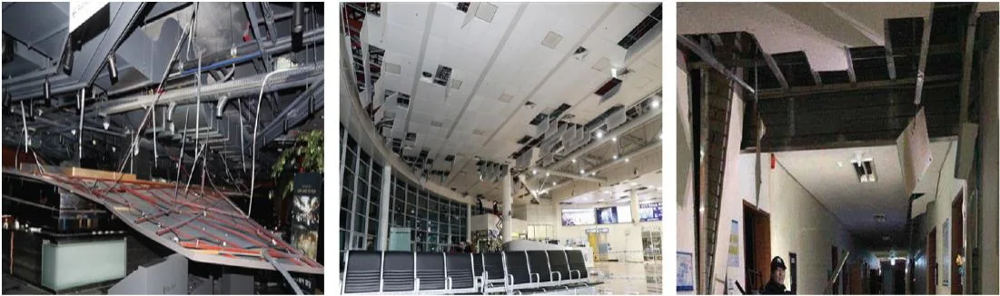
[제품 카탈로그]에서 재인용.)
<그림1-2> 2016년 경주/2017년 포항 지진 천장붕괴 사례
(출처: 연합뉴스; 헤럴드경제 외. 화영(2023a). 내진형 불연·흡음 천장 시스템
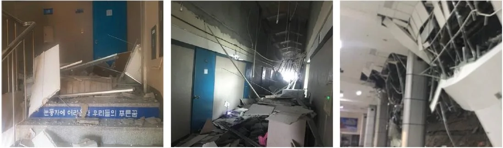
<그림2> 국토교통부(2019) 및 교육부(2020)의 건축물 내진설계기준
(출처: 국토교통부, 2019. 건축물 내진설계기준 [고시 제2019-711호]; 교육부,
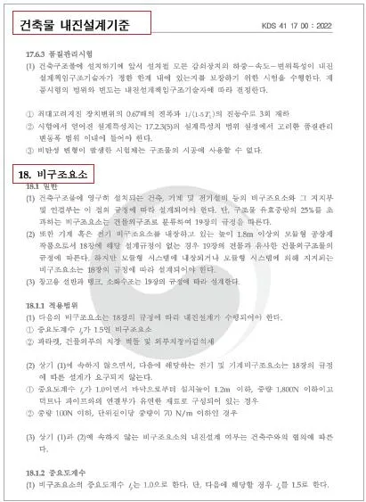
[제품 카탈로그]에서 재인용.)
2020. 학교시설 내진설계 기준 [교육부고시 제2020-223호].) (2) 두 번째 충격: 학교 건축물의 구조적 노후화 전국 학교 건축물의 노후화는 복합 수요를 창출하는 구조적 배경이다. 2025년 기준 전국 학교 건물 수는 65,015개 동이며, 이 중 30년 이상 경과한 노후 건물은 약 28,216개 동으로 전체의 43.4%에 달한다. 특히 40년 이상 경과한 건물은 약 18,789개 동으로 전체의 28.9%를 차지한다(교육부, 2025). 지역별로는 서울(56.8%), 부산(54.2%), 경북(53.1%), 전북(51.9%) 등 주요 도시에서 노후화가 심각하다(교육부, 2025). 이 노후 건축물들은 석면 교체 · 내진 보강 · 불연 자재 적용을 동시에 요구하는 복합적 수요를 창출하고 있으며, 이는 단일 성능이 아닌 내진성 · 불연성 · 친환경성을 통합적으로 충족하는 시스템 솔루션에 대한 수요로 전환되고 있다. (3) 세 번째 충격: 석면 문제 석면은 1급 발암물질로 2009년 이후 건축 자재 사용이 전면 금지되었으나, 과거 건축물에는 여전히 광범위하게 잔존하고 있었다. 정부 조사에 따르면 전국 유치원 · 초중고등학교의 약 22%가 여전히 석면 천장재를 사용하고 있었으며 (소성렬, 2005), 이는 학습 환경 내 유해 물질 노출이라는 직접적 위협과 함께 막대한 폐기 처리 비용 및 절차의 복잡성이라는 구조적 부담을 학교 현장에 지우고 있었다. 정부는 2027년까지 교육시설 내 석면 천장재를 친환경 자재로 전면 교체하는 정책을 추진 중이다(교육부, 2025 pp.12-15).
<그림3-1> 누수로 인한 텍스의 변색, 노후화 및 곰팡이가 서린 모습
(출처: 화영, 2026)
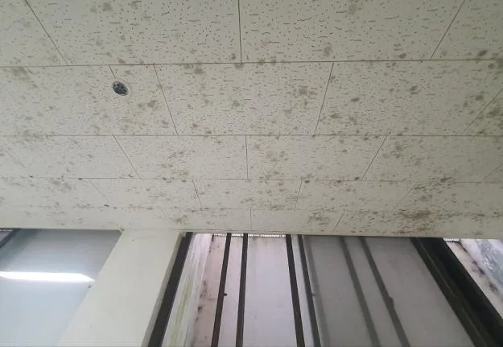
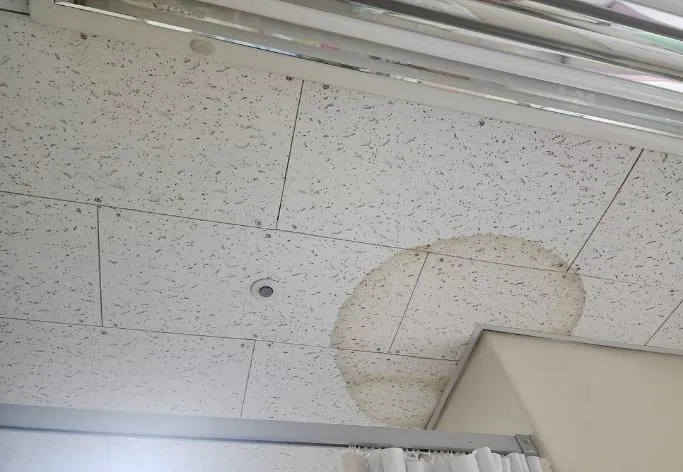
<그림3-2> 환경부의 석면 질환 발생 전망 (2045년 최고조 예상)
(출처: 박서경, 2024. SBS 8뉴스 캡처.)
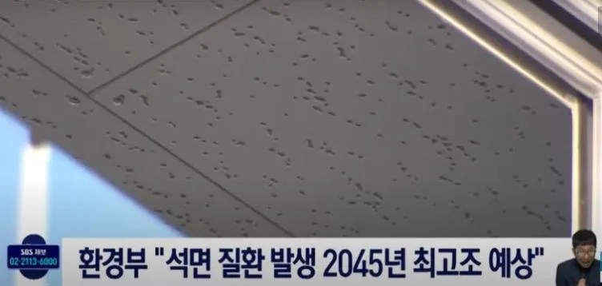
(4) 네 번째 충격: 불연 자재 의무화의 단계적 강화 건축물 내부 마감재료에 대한 불연 요건은 단계적으로 고도화되어 왔다. 2006년 난연 성능 분류체계의 전면 개편(불연 · 준불연 · 난연 3등급 체계 확립)을 시작으로, 2019년 외벽 불연 · 준불연 의무화 강화, 2021년 내부 마감재료 적용 범위 확대(천장 · 반자 · 벽 · 기둥 전체 포함), 2022년 복합자재 실물모형시험 의무화까지 이어졌다(건축물방화구조규칙, 2022, 제24조; 건축법 시행령, 2026, 제61조). 교육연구시설은 건축법 시행령 제61조에 의거 이 의무의 명시적 적용 대상이다.
1.1.2 기존 기술의 구조적 한계: 3종 위협
위에서 서술한 산업 환경의 변화는 기존 경량철골 천장재 기술의 세 가지 구조적 한계를 동시에 노출시켰다. ① 소재의 위험: 석면 텍스 문제 기존 천장재 시장의 지배적 소재였던 석면 텍스는 유해 물질 함유로 인한 학습 환경 위협과 함께, 막대한 폐기 처리 비용 및 절차의 복잡성이라는 이중의 문제를 내포하고 있었다. 석면 제거 사업의 국가적 의무화는 이 소재 기반의 천장재 시장 전체를 대체 수요로 전환시키는 구조적 계기가 되었다. ② 구조의 위험: 내진 취약 구조 기존 경량철골 천장재 시장의 지배적 설계였던 C형 캐링채널(Carrying Channel)과 더블엠바클립(Double M-Bar Clip) 방식은 수평 방향의 반복 하중에 대한 저항력이 근본적으로 취약하였다. 클립과 채널의 접촉면이 단순 면 접촉에 불과하여 지진 진동이 가해지면 채널이 쉽게 이탈되는 구조였으며, 경주 · 포항 지진의 29,393건에 달하는 천장 피해가 이 구조적 한계의 실증이었다. ③ 시공의 위험: 시공 품질 편차 기존 시공 방식은 숙련된 하수급자에 대한 전적인 의존을 특징으로 하였다. 작업자의 숙련도에 따라 시공 품질이 달라지는 구조에서는 동일한 제품을 사용하더라도 내진 성능이 균일하게 발현되지 않는다. 안전 성능의 불균일성과 체계적 관리의 부재는 내진 의무화 시대에 근본적인 한계로 작용하였다. 이 세 가지 위협의 귀결점은 하나다. ‘내진성, 불연성, 시공성을 동시에 충족하는 표준화된 시스템의 부재’. 시장은 복합 성능을 통합한 시스템 솔루션을 요구하고 있었으나, 기존 기술 체계는 이 요구에 응답하지 못하고 있었다.
1.1.3 시장 구조의 근본적 변화: 가치사슬 재편과 3대 동인
(1) 가치사슬 구조 변화 기존 경량철골 천장재 산업의 가치사슬은 원자재(철강 · 석고) → 부품 제조(경량철골 · 클립 · 채널) → 하수급자 시공 → 발주처(건설사 · 공공기관)의 선형 구조였다. 이 구조에서 제조사와 시공사는 분리되어 있었으며, 시공 품질에 대한 책임 소재가 불명확하다는 구조적 취약점이 존재하였다. 내진 의무화와 인증 기반 조달 구조로의 전환은 이 가치사슬을 근본적으로 재편하고 있다. 새로운 가치사슬에서는 단순 부품 공급자가 아닌 시스템 통합자(System Integrator) — 설계 · 제조 · 시공 · 인증을 일체화하는 기업 — 가 핵심 포지션을 차지하게 되었다.
<그림4> 경량철골 천장재 산업 가치사슬의 변화 (출처: 본인 작성.)
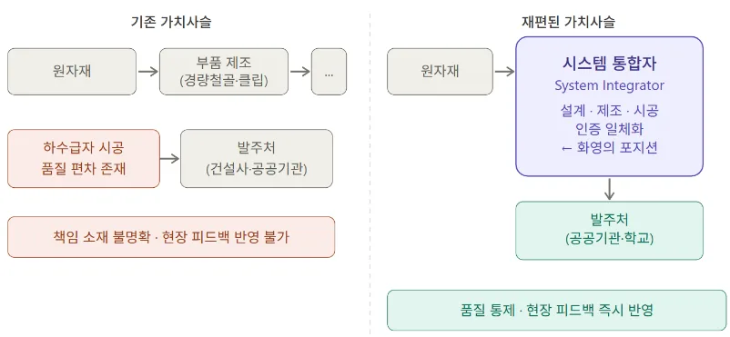
(2) 3대 동인 첫째, 경쟁 기준의 전환 — 가격에서 기술 성능으로: 내진설계 의무화와 안전 기준 강화로 인해 시장의 경쟁 기준 자체가 근본적으로 전환되었다. 기존에는 원가 경쟁력과 물량 공급 능력이 시장 지위를 결정하였으나, 내진 · 불연 · 흡음 성능의 공인 시험 결과가 수요처의 제품 선택 기준으로 부상하였다. 단순 저가 경쟁에서 기술 검증 기반 경쟁으로의 전환은 기술력이 없는 범용 자재 업체의 시장 진입을 구조적으로 차단하는 효과를 가져왔다. 둘째, 지식재산권 · 인증 기반 진입장벽의 형성: 규제 강화와 함께 특허 · 디자인권 · KS · K-Mark · 공인 성능 성적서 등 지식재산권과 기술 인증이 시장 진입의 실질적 장벽으로 기능하게 되었다. 이는 법적 필수 요건이 아님에도 불구하고, 발주처와 건설사가 시공하자/안전 책임 리스크를 회피하기 위해 인증 보유 업체를 선호하는 구조가 형성된 결과다. 인증을 선제적으로 확보한 기업은 경쟁사가 단기간에 복제할 수 없는 제도적 자산을 갖게 된다(Porter, 1980). 셋째, 공공 수요의 구조적 확대: 내진 의무화 법규 제정, 석면 교체 정책, 노후 학교 전면 개보수 수요가 중첩되면서 공공 발주 시장이 구조적으로 확대되고 있다. 2025년 기준 국내 경량철골 천장재 전체 시장은 약 8,500억~9,000억 원 규모로 추정되며, 이 중 조달청 나라장터를 통해 발주되는 내진 천장재 공공 조달 시장은 약 2,200억~2,500억 원에 달하는 것으로 분석된다(박봉제, 2026) 1 . 전체의 약 28%에 해당하는 조달 시장은 2027년 석면 교체 기한과 지속적인 내진 보강 사업으로 연결되는 중장기적·반복적 구조를 갖는다.
1.1.4 구조적 공백의 발생: 왜 아무도 해결하지 못했는가
이처럼 명확한 시장 수요가 존재함에도 불구하고, 이 공백을 메우는 데 성공한 기업이 쉽게 등장하지 못한 데에는 구조적 이유가 있다. (1) 대형 선발 주자의 구조적 한계 유창 · 대한강재 · 대륭 · 신성강건 등 매출 규모 300억~2,000억 원의 대형 선발주자들은 표준 규격재의 대량 생산에 최적화된 운영 구조를 보유하고 있었다. 이들에게 내진 특화 제품은 다품종 제품군 중 하나에 불과하며, 기존 대규모 생산 설비를 내진 특화 아키텍처 혁신 제품을 위해 재편하는 것은 내부 의사결정 구조상 우선순위를 부여받기 어렵다(박봉제, 2026). 또한 대량 생산과 하수급자 시공 구조에 최적화된 운영 방식은 현장 맞춤형 시공이 요구되는 내진 천장재 시장에 유연하게 대응하기 어렵게 만들었다. (2) 중소 선발주자의 구조적 생존 위기와 상용화 실패 대형 선발주자와는 다른 이유에서, 기술 개발을 시도한 중소기업들 역시 이 시장에서 성공적으로 자리잡지 못하였다. 대다수의 중소기업은 유통업에서 제조업으로 전환하는 과정에서 막대한 초기 설비 투자비와 고정비 부담으로 인해 소위 '데스밸리(Death Valley)'를 넘지 못하고 도산하는 경우가 허다하다(Auerswald & Branscomb, 2003). 화영 역시 전환기인 2014~2016년경 자금 압박과 인력난이라는 중소기업 특유의 생존 위기에 직면하였다. 그러나 화영은 기존 유통망을 통해 확보한 안정적인 현금흐름을 바탕으로 선제적 기술 투자를 단행함으로써, 이 위기 구간을 오히려 Rule Maker로 도약하기 위한 성장의 변곡점으로 전환하였다.
<그림5> 화영의 성장 모멘텀: 자원 제약 극복과 폭발적 성장(J-Curve) 실증
(출처: 본인 작성.)
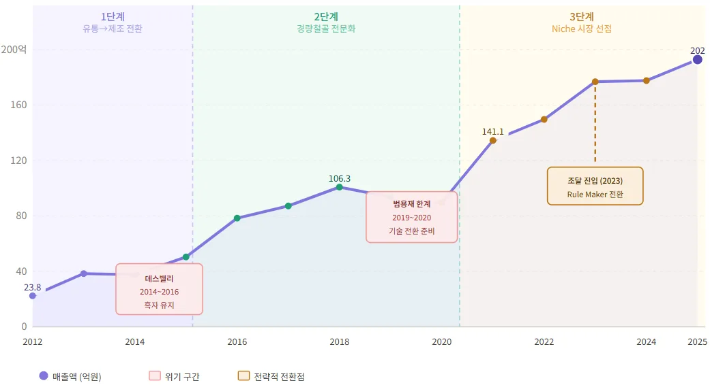
이러한 구조적 어려움 속에서 기술 개발을 시도한 중소 선발주자들의 실패는 더욱 주목할 만하다. 나라장터 기준 내진 천장재 관련 등록 업체는 약 40~50개 사이나, 실제 유의미한 시공 실적을 보유한 업체는 10개 사 내외에 불과하다(조달청, 2025a). 이는 기술 개발에 성공하더라도 상용화까지 이어지는 것이 구조적으로 얼마나 어려운가를 보여주는 수치다. 특히 조달 우수제품 지정을 받은 업체들 중에서도 실제 시공 실적이 전무하거나 미미한 사례가 존재하며, 무진기업과 제이엔티는 우수제품 인증을 보유하고 있음에도 실제 시공 실적이 화영 대비 1/10 수준 미만임이 확인된다(조달청, 2025a; 조달청, 2025b). 이들의 실패는 네 가지 요인으로 수렴한다. 첫째, 성능 신뢰성 부족 — 공인 시험기관의 검증 없이 '내진 제품'을 표방하는 데 그쳐 조달 심사를 통과하지 못하였다. 둘째, 시공 복잡성 — 내진 성능 시험은 통과하였으나 결합 방식이 지나치게 복잡하여 현장에서 시공팀이 기피하는 구조였다. 셋째, 인증 전략 부재 — 제품 개발에는 성공하였으나 NEP · NET · 조달 우수제품으로 이어지는 인증 경로를 전략적으로 설계하지 못하였다. 넷째, 사업화 전략 미흡 — 기술과 인증을 보유하였더라도 제조-시공 일체형 구조와 조달 시장 운영 역량을 갖추지 못해 지속 가능한 사업 모델로 연결하지 못하였다. 결과적으로 시장에는 구조적 공백이 존재하였다. 대형 선발주자는 전략적 경직성으로, 중소 선발주자는 상용화 역량의 부재로, 각각 다른 이유에서 이 공백을 메우지 못하였다. 결과적으로 내진성·불연성·시공성을 동시에 충족하는 표준화된 시스템은 시장에 존재하지 않았다 — 화영이 등장하기 전까지는.
1.1.5 연구 대상의 등장: (주)화영이라는 해답
이 구조적 공백을 메운 것이 2011년 설립된 후발 중소기업 (주)화영이다. 화영은 설립 이후 지속적인 우상향 성장을 달성하였으며, 2025년 기준 매출 202억 원, 조달 매출 115억 원을 기록하고 있다. 화영의 성과는 수치로 말한다. 국내 최초 무석면 내진형 천장 판넬 시스템 개발, 조달청 우수제품 단독 지정(석고텍스 마감재 시장), 내진성능 업계 최고(1.88g, 경쟁사 대비 최대 88% 우위), 국토부 2026년 상반기 표준품셈 대비 46% 원가 절감. 내진 천장재 조달 시장(약 2,500억 원) 내 화영의 점유율은 약 15~18%로 추정되며, 특히 '석고텍스 기반 내진 우수제품' 세부 품목에서는 70% 이상의 지배적 점유율을 기록하고 있다(조달청, 2025b; 화영, 2026). 이는 화영이 단순히 더 나은 제품을 만든 것이 아니라, 시장이 요구하는 복합 문제를 기술적 · 제도적 · 경제적으로 동시에 해결했음을 실증한다. 자원이 제한된 후발 중소기업이, 대기업도 중소 선발주자도 해결하지 못한 복합 성능 시스템 시장에서, 어떻게 선도적 위치를 형성하고 조달 시장의 Rule Maker로 전환할 수 있었는가? 이 이론적 퍼즐에 답하는 것이 본 연구의 출발점이다. 화영이 이 구조적 공백을 메울 수 있었던 것은 기존 업체들과 근본적으로 다른 세 가지 방향의 선택 때문이었다.
무엇을 혁신했는가, 어떻게 시장을 선택했는가, 누구와 어떤 구조로 혁신했는가 — 이 세 질문에 대한 화영의 답이 기존 업체들의 그것과 달랐다. 본 연구는 이 세 가지 질문에 답함으로써, 자원이 제한된 후발 중소기업이 어떻게 산업의 Rule Maker로 전환할 수 있는지를 규명한다.
1.2 연구 목적 및 연구 질문
이에 본 연구는 (주)화영의 사례를 통해 이 이론적 퍼즐을 해명하고자 한다. 본 연구의 목적은 국내 건축자재 시장에서 후발 중소기업인 (주)화영이 어떻게 선도적 시장 지위를 형성할 수 있었는지를 Architectural Innovation, Dynamic Capabilities, TIS의 통합적 이론 프레임으로 분석하고, 이로부터 자원이 제한된 후발 기업의 혁신 전략에 관한 이론적 · 실천적 시사점을 도출하는 것이다. 이를 위해 본 연구는 다음의 두 가지 연구 질문을 설정한다. RQ1: 후발주자인 (주)화영은 어떻게 국내 건축자재 산업에서 선도적 위치를 형성할 수 있었는가? RQ2: 화영의 성장 메커니즘이 산업 후발 기업들에게 주는 이론적 · 실천적 시사점은 무엇인가? RQ1은 화영의 혁신 방식과 전략적 선택의 메커니즘을 규명하는 데 초점을 두며, 이를 세 가지 이론 — Architectural Innovation(무엇을 혁신했는가), Dynamic Capabilities(어떻게 결정하고 움직였는가), TIS(누구와 어떤 구조로 혁신했는가) — 의 관점에서 분석한다. RQ2는 이 분석으로부터 추출한 이론적 기여와 후발 중소기업을 위한 실천적 함의를 제시한다.
1.3 연구 방법론 개요
본 연구는 Yin(2018)의 사례 연구(Case Study) 방법론을 채택하였다. 사례 연구는 ‘왜(Why)’와 ‘어떻게(How)’라는 연구 질문에 적합하며, 현실 맥락과 분리될 수 없는 복잡한 현상을 심층적으로 탐구하는 데 강점을 갖는다. 화영의 혁신 메커니즘은 특정 산업적·제도적·시장 맥락과 긴밀하게 연결된 현상으로, 이를 맥락과 분리하여 분석하는 것은 핵심적 설명력을 상실할 위험이 있다. 이러한 이유에서 본 연구는 단일 사례 연구(Single Case Study) 설계를 선택하였다. 자료 수집은 삼각검증(Triangulation) 원칙에 따라 1차 자료(대표이사 심층 인터뷰·화영 내부자료), 2차 자료(나라장터·특허청·정부 정책 문서·언론 보도), 문헌 자료(학술 이론 및 유사 사례 연구)의 복수 원천을 활용하였다. 분석은 이론 기반 패턴 매칭(Theory-driven Pattern Matching) 방식으로 수행하였다. 연구 방법론에 대한 상세한 논의는 3장에서 제시한다
1.4 논문 구성
본 논문은 총 5개 장으로 구성된다. 1장 서론에서는 연구의 배경이 되는 산업 환경의 변곡점과 시장 구조의 변화를 서술하고, 연구 목적과 연구 질문, 연구 방법론의 개요를 제시한다. 2장 이론적 배경에서는 본 연구의 분석 프레임을 구성하는 세 가지 이론 — Architectural Innovation(Henderson & Clark, 1990), Dynamic Capabilities(Teece, 2007), TIS: Technology Innovation System(Carlsson & Stankiewicz, 1991; Hekkert et al., 2007) — 의 핵심 개념과 선행 연구를 검토하고 세 이론의 통합적 분석 프레임워크를 제시한다. 3장 연구 방법론에서는 단일 사례 연구 설계의 방법론적 근거, 연구 대상 선정 기준, 자료 수집 및 분석 방법, 연구의 타당성 확보 방안을 상세히 기술한다. 4장 사례 분석에서는 (주)화영의 기업 개요
및 연혁(4.1)을 소개한 후, Architectural Innovation(4.2), Dynamic Capabilities(4.3), TIS(4.4)의 세 관점에서 화영의 혁신 메커니즘을 분석한다. 5장 결론 및 시사점에서는 분석 결과를 종합하여 연구 질문에 대한 답을 제시하고 이론적 기여와 후발 중소기업을 위한 실천적 시사점을 도출하며 연구의 한계와 향후 연구 방향을 제안한다.
제2장 이론적 배경
2.1 산업 분석
2.1.1 국내 경량철골 천장재 시장 및 경쟁 구조
국내 건축용 경량철골 천장재 시장은 아연도금강판을 원자재로 하는 경량철골 기반의 범용 자재 시장으로, 2025년 기준 전체 시장 규모는 약 8,500억~9,000억 원으로 추정된다(박봉제, 2026). 이는 공공 교육시설의 환경 개선 사업 확대로 인해 전년 대비 약 6.5% 성장한 수치이다. 대형 제조사 중심의 과점 구조를 형성하고 있으며, KCC, LX하우시스, 현대L&C 등 대기업 계열사가 유통망과 브랜드 인지도를 바탕으로 마감재·완제품 시장을 선점해 온 가운데, 유창 · 대한강재 ·대륭 · 신성강건 등 경량철골 전문 제조사들이 범용 자재 중심의 대량 생산으로 시장을 운영하고 있었다. 이 구조에서 후발 중소기업은 가격 경쟁 외의 차별화 수단을 확보하기 어려운 구조적 불리함에 처해 있었다. 경량철골 천장재는 범용 자재(Commodity)의 성격이 강해, 기술적 차별화보다는 원가 경쟁력과 유통 채널이 시장 지위를 결정하는 핵심 요인으로 작동해 왔다. 이에 따라 후발 중소기업이 선발주자와 정면 경쟁을 통해 시장 지위를 확보하는 것은 구조적으로 매우 어려운 환경이었다. 실제로 (주)화영의 주요 경쟁사인 대형 선발주자들(유창 · 대한강재 · 대륭 · 신성강건 등)은 화영 대비 매출 규모 기준 5~10배의 규모를 보유하고 있다(화영, 2026). 그러나 2016년 경주 지진(규모 5.8, 피해 9,319건)과 2017년 포항 지진(규모 5.4, 피해 20,074건)이 연속 발생하면서 이 시장에 구조적 전환이 촉발되었다. 두 차례의 재해로 천장재 붕괴로 인한 대피로 차단과 직접 낙하 피해가 사회적으로 부각되었으며, 이는 단순 가격 경쟁 중심의 시장 논리가 기술 인증 기반 경쟁으로 재편되는 변곡점이 되었다.
2.1.2 내진 규제의 제도화와 시장 재편
2016~2017년 연속 지진 발생 이후, 정부는 건축물 비구조요소에 대한 내진 성능 기준을 법제화하였다. 2019년 3월 국토교통부(2019)는 건축물 내진설계기준을 개정하여 천장·벽 등 비구조요소에 대한 내진설계를 의무화하였고(국토교통부 고시 4월에는 교육부(2020)가 학교시설 비구조요소 내진설계기준을 추가로 제정하였다. 이로써 공공기관, 학교, 병원, 국가 · 지방자치단체 청사 등 주요 시설물에 대한 내진 천장재 수요가 제도적으로 창출되었다. 이 규제 변화는 기존 시장 질서를 근본적으로 재편하는 효과를 가져왔다. 기존 선발주자들이 강점을 보유하고 있던 '가격 경쟁력과 물량 공급 능력'이 '내진 성능 인증'이라는 새로운 진입 요건 앞에서 상대적으로 중요성이 약화되었고, 인증을 선제적으로 취득한 기업이 시장 내 포지션을 재설정할 수 있는 기회가 열렸다.
2.1.3 조달시장 구조와 제도적 진입장벽
국내 공공 조달시장은 조달청이 운영하는 나라장터(G2B)를 중심으로 구성되며, '조달청 우수제품' 지정 제도는 시장 진입에 있어 결정적인 제도적 레버리지로 기능한다. 우수제품으로 지정된 품목은 2단계 경쟁 입찰이 면제되며 수의계약이 가능하여, 경쟁사가 동일한 입찰 구조에 진입하지 못하는 제도적 진입장벽으로 작동한다. 우수제품 지정을 위해서는 KS인증, 특허권, 공인 시험기관의 성능시험 성적서 등 복수의 요건을 동시에 충족해야 한다. 내진 성능의 경우 공인 기관의 진동대 시험을 통과해야 하며, 화영의 제품은 최대지반가속도(지진에서 지면이 가속되는 힘) 1.88g 기준을 달성하여 동일 시험기관 기준 경쟁사(무진기업 1.20g, 제이엔티 1.00g) 대비 최고 수준의 내진 성능을 보유하고 있다(조달청, 2025b). 또한 화영의 현장설치도 기준 가격 (49,000원/㎡)은 경쟁 우수제품 (73,000원 · 72,483원) 대비 약 33% 낮은 수준으로, 성능과 가격 양면에서 경쟁 우위를 확보하고 있다.
2.1.4 산업 가치사슬 분석
경량철골 천장재 산업의 가치사슬은 원자재(아연도금강판) → 부품 · 보강재 제조 → 완제품(천장 시스템) 조립 → 시공 · 납품의 단계로 구성된다. 기존 구조에서 대형 선발주자는 완제품 중심의 대량 생산에 집중하고 시공은 하수급자에게 위탁하는 분리 구조를 유지하였다. 이 구조에서는 시공 품질의 균일성 확보가 어려우며 현장 페인포인트가 제품 설계에 역방향으로 반영되는 피드백 루프가 부재하다는 구조적 취약점이 존재하였다. (주)화영은 이 가치사슬에서 핵심 부속 제조(PVC 창호 고정물 · 보강재, 경량철골)에서 출발하여 완제품 설계, 인증 획득, 직접 시공 단계로 점진적으로 상위 가치사슬을 통합하는 전략을 취하였다. 2025년 기준 화영의 주요 매출처는 현대엔씨(23.7%), KCC 서울영업소(10.3%), 경북대학교(3.9%), 강원대학교(3.4%) 등이며, 매입처는 케이지스틸(25.1%), 피앤케이인더스트리(11.9%)
등 철강 원자재 중심 구조다(화영, 2026). 이는 화영이 자체 제조 역량과 외부 원자재 조달을 결합한 제조-시공 일체형 구조를 확립하고 있음을 보여준다.
2.2 이론적 프레임워크
본 연구는 (주)화영의 후발주자 혁신 메커니즘을 분석하기 위해 세 가지 혁신이론을 이론적 분석틀로 채택한다: Architectural Innovation(Henderson & Clark, 1990), Dynamic Capabilities(Teece, Pisano & Shuen, 1997; Teece, 2007) 그리고 TIS: Technology Innovation System (Carlsson & Stankiewicz, 1991; Hekkert et al., 2007) 이다. 세 이론은 각각 제품 · 공정 수준의 기술혁신, 기업 역량의 동적 재편, 산업 생태계 수준의 제도적 혁신이라는 서로 다른 분석 층위를 다루며, 이를 통합적으로 적용함으로써 화영의 성장 메커니즘을 다층적으로 분석하는 데 유효하다. 각 이론의 적용 논리는 다음과 같다: Architectural Innovation은 화영이 신소재 없이 설계 구조의 재편만으로 내진 성능을 구현한 제품혁신 방식을 설명하고, Dynamic Capabilities는 PVC 창호 부속 제조업에서 내진 천장 시스템으로의 사업 포트폴리오 전환 메커니즘을 분석하며, TIS는 내진 천장재 기술 섹터 내 행위자 네트워크와의 전략적 연계를 통해 화영이 Rule Maker 지위를 제도적으로 고착화한 생태계 전략을 해석한다.
2.2.1 Architectural Innovation (아키텍처 혁신)
Henderson과 Clark(1990)은 혁신의 유형을 구성요소(Component)의 핵심 개념(Core concept) 변화 여부와, 구성요소 간 연결 방식(Linkage/architecture) 변화 여부의 두 축에 따라 네 가지로 분류하였다: 점진적 혁신(Incremental Innovation), 모듈형 혁신(Modular Innovation), 아키텍처 혁신(Architectural Innovation), 급진적 혁신(Radical Innovation). 이 중 아키텍처 혁신이란 개별 구성요소의 핵심 개념은 유지하되, 구성요소 간 연결 방식과 전체 시스템의 설계 구조를 근본적으로 재편하는 혁신을 의미한다. 아키텍처 혁신이 갖는 전략적 중요성은 선발주자의 기존 역량을 무력화하는 효과에 있다. 선발주자는 기존 아키텍처에 최적화된 조직 루틴, 생산 설비, 축적된 지식 구조를 보유하고 있기 때문에 아키텍처가 변화하는 국면에서 오히려 이 역량들이 경직성(Rigidity)으로 작용한다. Henderson & Clark(1990)은 이를 선발주자에게 보이지 않는(Invisible) 위협으로 규정하였다. 즉 구성요소 수준의 지식은 여전히 유효하나, 구성요소 간 연결에 대한 기존의 가정 (Architectural knowledge)이 무효화됨으로써 선발주자의 역량이 오히려 장애가 된다. 후발주자의 관점에서 아키텍처 혁신은 중요한 전략적 함의를 갖는다. 후발주자는 기존 아키텍처에 대한 매몰 투자(Sunk cost)가 없으므로, 새로운 설계 구조를 선제적으로 채택하여 선발주자와 역전된 경쟁 지위를 확보할 수 있다. 본 연구에서는 화영이 기존 천장재 시장의 지배적 설계(Dominant design)였던 '시공 편의성 중심의 단순 체결 구조'를 '내진 성능 중심의 S-Channel · 내진 클립 이중 체결 구조'로 재편한 것을, 구성요소(아연도금강판, 클립)는 유지하면서 연결 아키텍처를 전환한 아키텍처 혁신으로 해석한다.
<그림6> Henderson & Clark(1990) 혁신 유형 분류
(출처: Henderson & Clark 1990’ 저자 재구성.)
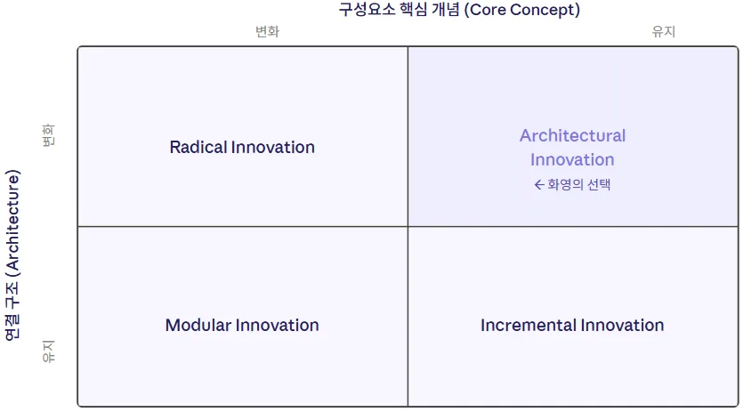
2.2.2 Dynamic Capabilities (동적역량)
Dynamic Capabilities 개념은 Teece, Pisano, Shuen(1997)이 제시한 것으로, 기업이 급변하는 외부 환경에 대응하기 위해 내외부 역량을 통합(Integrating) · 구축(Building) · 재구성(Reconfiguring)하는 능력으로 정의된다. 이는 특정 환경에 최적화된 정적인 역량(Static capability)과 구분되는 상위 차원의 메타역량(Meta-capability)이다. Teece(2007)는 동적역량을 세 단계의 프로세스로 구체화하였다. Sensing(감지)은 시장·기술·제도 환경의 변화 속에서 기회와 위협을 조기에 포착하는 능력으로, 단순한 시장 분석을 넘어 기술 변화 방향과 규제 환경의 흐름을 통합적으로 해석하는 역량이다. Seizing(포착)은 감지된 기회를 실제 사업화하기 위해 자원을 동원하고 비즈니스 모델을 설계·실행하는 능력으로, 자원 투입의 시점과 방식이 결정적 성과 차이를 만든다. Transforming(변환)은 기존의 자원 배치와 조직 구조를 새로운 전략에 부합하도록 지속적으로 재구성하는 능력으로, 이는 일회적 변화가 아닌 지속적 조정 역량(Continuous realignment)을 의미한다. 동적역량은 기술 변화가 빠르고 시장 불확실성이 높은 고속도 시장(High-velocity market)에서 특히 중요하다(Teece, 2007). 2016년 이후 내진 규제의 급속한 법제화로 시장 구조가 단기간에 재편된 국내 건축자재 시장은 이러한 고속도 시장의 특성을 보인다.
본 연구에서는 화영이 PVC 창호 부속 제조 (2011~2014)에서 경량철골 생산(2015~2018), 내진 천장 시스템 개발 및 조달시장 진입(2019~2023)으로 이어지는 포트폴리오 전환 과정을 Teece의 Sensing-Seizing-Transforming 프레임으로 분석한다.
<그림7> Teece(2007) Dynamic Capabilities 프레임워크(출처: Teece, 2007; 본인 작성.)
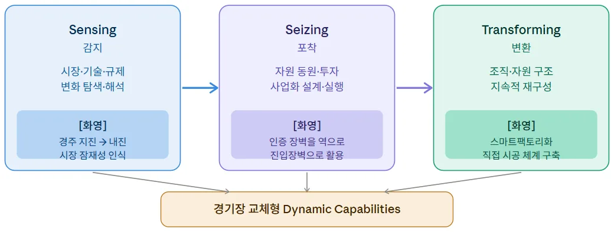
2.2.3 TIS: Technology Innovation System (기술혁신시스템)
TIS는 Carlsson & Stankiewicz(1991)가 제시하고 Hekkert et al.(2007)이 체계화한 혁신 생태계 분석 프레임워크로, 특정 기술 영역의 혁신이 행위자(Actors), 제도(Institutions), 네트워크(Networks)의 상호작용을 통해 어떻게 창출 · 확산되는지를 분석한다. TIS는 분석 단위를 특정 기술 섹터로 한정한다는 점에서, 대학 · 산업 · 정부의 3축 상호작용을 국가 혁신시스템 수준에서 논의하는 Triple Helix 모델(Etzkowitz & Leydesdorff, 2000)과 분석 스케일이 구별된다. 단일 기술 섹터 내 행위자 간 네트워크 형성과 제도적 정당성 확보 메커니즘을 분석하는 데 있어 TIS의 미시적 분석 층위가 보다 적합하다. Hekkert et al.(2007)은 TIS 내 혁신의 창출과 확산을 일곱 가지 시스템 기능(System Functions)으로 설명한다. 이 중 본 연구의 분석 맥락과 직접 관련되는 네 가지는 다음과 같다. 시장 형성(Market formation)은 제도적 개입을 통해 기존에 존재하지 않던 수요가 구조적으로 창출되는 과정이다. 정당성 확보(Legitimation)는 공인 검증 체계를 통해 특정 기술이 시장에서 신뢰 가능한 표준으로 수용되는 과정이다. 지식 확산(Knowledge diffusion) 은 행위자 간 협업을 통해 특정 기업의 기술적 지식이 개별 기업의 경계를 넘어 산업 내 네트워크로 확산되는 과정이다. 긍정적 외부효과 창출(Creation of positive externalities)은 행위자 간 협력 네트워크가 기술의 산업 확산을 가속화하는 과정이다. TIS 이론에서 이 네 가지 시스템 기능의 활성화 주체는 통상 대기업 또는 정부로 전제되나, 자원이 제한된 중소기업이 능동적 활성화 주체로 기능하는 경우에 대한 실증 연구는 아직 충분히 축적되지 않았다. 본 연구에서 TIS는 화영이 내진 천장재 기술 섹터 내에서 공인시험기관 (KCL) · 정부 (국토부·교육부·조달청·환경부) · 대형 건설사 (우미건설) · 대형 자재사 (KCC·LX하우시스)라는 4개 행위자 축과의 전략적 연계를 통해 시장 형성 · 정당성 확보 · 지식 확산 · 긍정적 외부효과 창출이라는 네 가지 시스템 기능을 어떻게 선제적으로 활성화하고 Rule Maker 지위를 제도적으로 고착화하였는지를 분석하는 틀로 활용된다.
<그림8> 화영의 TIS 행위자 네트워크 구조
(출처: Hekkert et al., 2007; Carlsson & Stankiewicz, 1991; 본인 작성.)
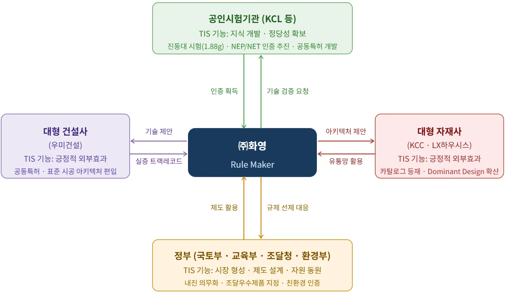
2.3 선행 연구 검토
2.3.1 후발주자 혁신 전략에 관한 선행 연구
후발주자(Late mover)의 혁신 전략에 관한 연구는 선발주자 우위(First-mover advantage) 이론에 대한 반론으로서 발전하였다. Lieberman & Montgomery(1988)는 선발주자 우위를 기술적 선도, 희소 자원의 선점, 구매자 전환 비용의 세 가지로 유형화하였으나, 동시에 이러한 우위가 모방 용이성과 시장 불확실성이 높은 환경에서는 약화될 수 있음을 지적하였다.
Shankar, Carpenter & Krishnamurthi(1998)는 후발주자가 시장 진입 시점을 늦추더라도 제품 혁신성과 마케팅 강도를 높임으로써 시장 점유율을 획득할 수 있음을 실증하였다. 중소기업 맥락의 후발주자 혁신에 관한 연구에서는 자원 제약을 우회하는 전략적 포지셔닝이 핵심 성공 요인으로 제시된다. Audretsch(1995)는 중소기업이 대기업 대비 혁신 효율성(Innovation efficiency)에서 우위를 가질 수 있음을 논증하였으며, 이는 자원 집중화와 의사결정 속도에서 비롯된 것이다. 그러나 기존 연구는 주로 선발주자 우위의 약화 조건을 규명하는 데 집중하였으며, 규제 전환 국면에서 후발 중소기업이 인증과 조달 제도를 전략적 레버리지로 활용하여 시장 포지션을 역전하는 구체적 메커니즘에 대한 실증 연구는 아직 미흡하다.
2.3.2 Architectural Innovation과 산업 전환에 관한 선행 연구
Henderson & Clark(1990)의 아키텍처 혁신 이론은 이후 다양한 산업 맥락에서 검증되었다. Utterback & Suárez(1993)는 지배적 설계(Dominant design)의 출현이 산업 내 경쟁 구조를 재편하고 후발 진입자에게 시장 진입 기회를 제공하는 메커니즘을 분석하였다. Christensen(1997)은 파괴적 혁신(Disruptive innovation) 이론을 통해 저가 · 저성능으로 시장에 진입한 후발주자가 점진적 성능 개선을 통해 주류 시장을 잠식하는 패턴을 제시하였다. 국내 연구에서도 김영진(2008)은 부품업체가 소재 변경 없이 연결 구조의 재설계만으로 시스템업체의 플랫폼을 교체하는 아키텍처 혁신 사례를 실증하였다. 그러나 이러한 논의가 자원이 제한된 후발 중소기업의 건축자재 산업 맥락에서 선발주자 역량을 무력화하는 구체적 메커니즘으로 확장된 실증 연구는 찾아보기 어려우며, 이는 본 연구가 탐색적 단일 사례 연구 방식을 채택한 주요 이유이기도 하다.
2.3.3 Dynamic Capabilities와 포트폴리오 전환에 관한 선행 연구
Eisenhardt & Martin(2000)은 Dynamic Capabilities가 단일하고 독특한 역량이 아니라 반복 가능한 루틴의 집합임을 논증하며 이 루틴이 안정적 시장에서는 점진적 변화를, 고속도 시장에서는 단순하고 신속한 프로세스를 통한 급격한 변화를 가능하게 함을 제시하였다. Zollo & Winter(2002)는 Dynamic Capabilities의 진화가 경험 축적, 지식 명확화(Knowledge articulation), 지식 코드화(Knowledge codification)의 세 단계 학습 메커니즘을 통해 이루어짐을 논증하였다. 중소기업의 Dynamic Capabilities에 관한 연구에서 Helfat & Peteraf(2003)는 역량의 수명 주기(Capability lifecycle)
개념을 도입하여, 기업이 기존 역량을 분기(Branching) · 결합(Combining) · 전용(Redeployment)하는 방식으로 새로운 역량을 구축함을 논증하였다. 이는 화영이 PVC 보강재 제조 역량을 기반으로 경량 철골 · 내진 시스템으로 순차 확장한 패턴과 직접 대응된다.
2.3.4 TIS와 공공조달 혁신에 관한 선행 연구
Carlsson & Stankiewicz(1991)는 특정 기술 영역 내 행위자 · 제도 · 네트워크의 상호작용이 혁신의 창출과 확산을 결정짓는다는 TIS 개념을 제시하였으며, Hekkert et al.(2007)은 이를 시장 형성 · 정당성 확보 · 지식 확산 · 긍정적 외부효과 창출 등 일곱 가지 시스템 기능으로 체계화하였다. TIS 프레임워크는 국가 혁신시스템 수준의 분석보다
특정 기술 섹터 내 미시적 행위자 네트워크와 제도적 포지셔닝을 분석하는 데 강점을 갖는다. 그러나 기존 TIS 연구는 주로 대기업 또는 정부 주도의 시스템 기능 활성화를 전제하며, 자원이 제한된 후발 중소기업이 능동적 활성화 주체로서 혁신 생태계를 선제적으로 설계하는 메커니즘은 충분히 규명되지 않았다. Edquist & Hommen(1999)은 공공조달이 혁신의 수요 측 정책 수단으로서 기업의 기술 혁신을 유인하는 효과를 가짐을 논증하였다.
특히 혁신 지향 공공조달(Innovative public procurement)은 성능 기준을 제시하고 민간 기업이 이를 달성하는 방식으로 혁신을 촉진한다는 점에서, 단순한 구매 행위를 넘어 산업 혁신 생태계의 설계 메커니즘으로 기능한다. 본 연구는 화영의 사례를 통해 후발 중소기업이 공공조달이라는 시스템 기능을 전략적으로 활성화하여 TIS 생태계의 설계자로 전환하는 메커니즘을 실증함으로써 이 두 선행연구의 공백을 동시에 메우고자 한다.
2.4 통합 분석 프레임워크
본 연구의 통합 분석 프레임워크는 하나의 근본 질문에서 출발한다. 화영의 성공은 단순히 더 나은 기업 역량의 산물인가, 아니면 특정 외생 조건과 조직 역량의 결합이 만들어낸 것인가? 2016~2017년 연속 지진은 국내 건축자재 시장에 외생적 충격을 가했고, 정부의 내진 규제 제도화(2019~2020)는 이를 구조적 수요로 전환하였다. 본 연구는 이를 Government-induced Demand Pull Shock — 예측 불가능한 외생 사건이 정부의 제도적 개입을 통해 급격한 시장 수요를 창출하는 현상 — 으로 개념화한다 (Edquist & Hommen, 1999; Blind, 2012). 그러나 이 수요충격은 시장의 모든 기업에게 동일하게 주어졌다.
대형 선발주자도, 중소 선발주자도, 화영도 같은 충격 앞에 서 있었다. 그럼에도 대형 선발주자는 전략적 경직성으로, 중소 선발주자는 상용화 역량 부재로 각각 실패하였고, 화영만이 이 충격을 기회로 전환하였다. 본 논문의 핵심 분석 질문은 바로 여기서 출발한다: "동일한 Demand shock 앞에서, 왜 화영만이 그것을 누구보다 빠르게 포착하고 조직적으로 대응할 수 있었는가?" 이 질문에 답하는 것이 세 이론의 역할이다. Architectural Innovation은 자원 제약 속에서 어떤 기술적 대응이 가능했는지를(What), Dynamic Capabilities는 수요충격을 포착하고 전환하는 조직적 메커니즘이 무엇이었는지를(How), TIS는 그 대응이 어떻게 제도적 · 생태계적 우위로 고착화되었는지를(With whom & Through what structure) 각각 설명한다.
2.4.1 세 이론의 분석 층위와 상호 보완성
본 연구가 Architectural Innovation, Dynamic Capabilities, TIS의 세 이론을 통합적으로 적용하는 이유는, 화영의 혁신 메커니즘이 단일 이론으로는 완전히 설명되지 않는 다층적 구조를 갖기 때문이다. 세 이론은 각각 서로 다른 분석 층위와 질문에 답한다. Architectural Innovation은 ‘무엇을 혁신했는가(What)’의 층위에서 작동한다. 화영이 기존 천장재 시스템의 어떤 요소를 변경하고 어떤 요소를 유지했는지 그리고 이 선택이 왜 선발주자 역량을 무력화하는 효과를 가졌는지를 제품·기술 수준에서 설명한다. Dynamic Capabilities는 ‘어떻게 결정하고 움직였는가(How)’의 층위에서 작동한다. 화영이 범용재 시장에서 기술 집약 Niche 시장으로의 전략적 전환을 어떤 프로세스를 통해 실행하였는지를 기업 역량과 의사결정의 수준에서 분석한다. TIS는 '누구와 어떤 구조로 혁신했는가(With whom & Through what structure)'의 층위에서 작동한다. 화영이 공인시험기관·정부·대형 건설사·대형 자재사의 4개 행위자 축과의 전략적 연계를 통해 어떻게 TIS 시스템 기능을 활성화하고 Rule Maker 지위를 제도적으로 고착화하였는지를 생태계 수준에서 해석한다.
<그림9> 통합 분석 프레임워크 — 세 이론의 분석 층위 (출처: 본인 작성.)
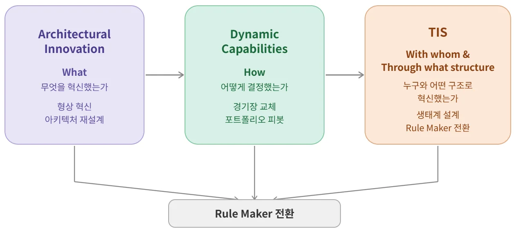
2.4.2 세 이론의 상호 연동 구조
세 이론은 각각의 분석 층위에서 독립적으로 기능하는 동시에, 상호 연동되는 구조를 형성한다. Architectural Innovation → Dynamic Capabilities: 아키텍처 혁신의 방향(S-Channel · 내진 클립의 연결 구조 재편)은 Dynamic Capabilities의 Seizing 단계에서 내려진 전략적 선택의 산물이다. 어떤 아키텍처를 선택하느냐는 Dynamic Capabilities의 Sensing(시장 신호 포착)과 Seizing(기술 투자 결정)에 의해 결정된다. Dynamic Capabilities → TIS: Dynamic Capabilities의 Transforming(조직 변화)은 TIS의 생태계 구축과 동시에 진행된다. 화영이 조달 우수제품 인증을 획득하고 KCC · 우미건설과의 협력 구조를 구축하는 과정은 Transforming의 실행 결과이자 TIS 생태계 설계의 구현이다. TIS → Architectural Innovation: TIS 생태계 내에서 정부의 내진 의무화 규제는 '시장 형성(Market formation)'이라는 시스템 기능을 활성화함으로써 화영의 아키텍처 혁신 방향(내진성능 최우선 설계)을 결정짓는 제도적 외부 조건으로 작용하였다. 이 시스템 기능이 없었다면 아키텍처 혁신의 방향 자체가 달라졌을 것이다. 이 상호 연동 구조는 세 이론 중 어느 하나를 제거하면 화영의 혁신 메커니즘 전체가 설명되지 않음을 의미한다. Architectural Innovation만으로는 ‘왜 화영이 그 방향을 선택했는가’를 설명할 수 없고, Dynamic Capabilities만으로는 ‘어떤 구체적 혁신을 실행했는가’와 ‘어떤 생태계 속에서 기능했는가’를 설명할 수 없으며, TIS만으로는 ‘화영이 내부적으로 무엇을 어떻게 바꿨는가’를 설명할 수 없다. 결론적으로 본 프레임워크는 'AI(What)-DC(How)-TIS(With whom & Through what structure)'의 통합 구조로 요약된다. Architectural Innovation은 부품 하나가 아닌 천장틀 전체의 연결 방식을 재정의하여 기술적 우위를 창출하는 '무엇'을, Dynamic Capabilities는 환경 변화를 감지하여 조직의 자산을 재배치하고 데스밸리를 극복하는 '어떻게'를, TIS는 내부의 혁신 성과를 공인시험기관·정부·대형 건설사·대형 자재사와 결합하여 산업 표준으로 확산시키는 '누구와 어떤 구조로'를 설명한다. 세 이론이 유기적으로 결합할 때, 자원이 제한된 후발 중소기업이 어떻게 Rule Maker로 전환하는지를 완전하게 규명할 수 있다.
2.4.3 분석 프레임워크의 적용 방식
본 연구는 4장 사례 분석에서 세 이론을 순차적으로 적용하되, 각 이론의 분석이 독립적으로 완결되는 동시에 다른 이론의 분석을 전제하거나 보완하는 방식으로 서술한다. 4.2 Architectural Innovation에서는 화영의 형상 혁신이 Henderson & Clark(1990)의 아키텍처 혁신 정의에 부합하는 네 가지 근거를 논증하고, 선발주자 역량 경직성 효과와 IP 망 전략으로 연결한다. 4.3 Dynamic Capabilities에서는 창업자 사전 지식 기반 포트폴리오 확장(4.3.2), Niche 기술 집약 시장 전환(4.3.3), 친환경 · 무석면 전환(4.3.4)의 세 주제를 Sensing – Seizing - Transforming 프레임으로 분석하고 중소기업형 Dynamic Capabilities의 이론적 기여를 도출한다. 4.4 TIS에서는 연구기관 · 정부 · 대형 건설사 · 대형 자재사의 4개 행위자 축이 각각 수행하는 시스템 기능을 분석하고, 화영이 시스템 기능의 수혜자에서 능동적 활성화 주체(Rule Maker)로 전환하는 메커니즘을 논증한다. 이상에서 논증한 세 이론의 통합적 분석 프레임워크는 <그림10>과 같이 도식화된다.
Architectural Innovation(What)을 핵심 동력으로, Dynamic Capabilities(How)를 실행 메커니즘으로, TIS(With whom & Through what structure)를 생태계 확산 경로로 삼아 세 축이 유기적으로 결합할 때, 화영은 내진 천장재 기술 섹터의 시스템 기능을 선제적으로 활성화함으로써 단순한 시장 점유를 넘어 산업 전체의 성능 기준을 상향 견인하는 Rule Maker 지위에 도달한다.
<그림10> 화영의 Rule Maker 전환 메커니즘 — 기술·역량·생태계의 복리 구조
(출처: 본인 작성.)
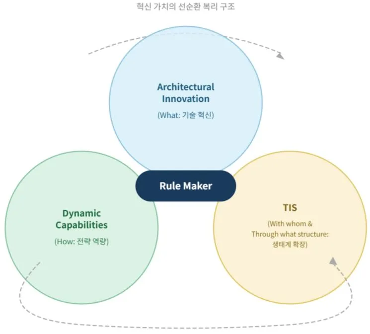
제 3장 연구방법론
본 연구는 (주)화영이 후발주자임에도 국내 건축자재 시장에서 선도적 지위를 형성할 수 있었던 메커니즘을 규명하기 위한 단일 사례 연구(Single Case Study)다. Yin(2018)은 단일 사례 연구가 적합한 조건으로 극단적 또는 독특한 사례(Extreme or Unique Case)와 계시적 사례(Revelatory Case)를 제시하였다. 화영은 이 두 조건을 모두 충족한다. 극단적 · 독특한 사례의 측면에서, 화영은 매출 규모 5~10배의 대형 경쟁사가 선점한 범용재 시장에서 후발 중소기업으로 출발하였음에도, 조달시장 진입 첫 해에 약 152,000㎡, 80억 원 이상의 수주를 달성하고 석고텍스 마감재 분야의 사실상 단독 공급자 지위를 확보하였다. 또한 15년동안 지속적인 우상향 성장(23.8억→202억), 내진성능 업계 최고(1.88g), 표준품셈 대비 46% 원가 절감이라는 성과는 건축자재 산업의 통상적 성장 궤적에서 현저히 벗어난 사례다. 거시적 사례의 측면에서, 화영의 성공 메커니즘은 대규모 R&D 투자나 신소재 개발 없이 아키텍처 수준의 혁신과 제도적 포지셔닝의 결합만으로 후발 중소기업이 선발주자를 역전할 수 있음을 보여준다. 이는 자원이 제한된 후발 중소기업의 혁신 전략에 관한 이론적 명제를 검증하고 확장하는 계시적 함의를 갖는다. 세 이론의 층위를 보다 명확히 정의하면, Architectural Innovation은 '무엇을 혁신할 것인가'의 전술(Tactics) 층위를, Dynamic Capabilities는 '어떻게 경기장을 교체할 것인가'의 전략(Strategy)
층위를, TIS는 '누구와 생태계를 설계할 것인가'의 생태계(Ecosystem) 층위를 각각 담당한다. 이 세 층위가 유기적으로 결합될 때 자원이 제한된 후발 중소기업이 Rule Maker로 전환될 수 있다는 것이 본 연구의 핵심 명제다.
3.1 연구 설계
본 연구는 탐색적 · 설명적 사례 연구(Exploratory-Explanatory Case Study) 방식을 채택한다.
탐색적 성격은 화영의 혁신 메커니즘을 구성하는 요인들을 귀납적으로 발견하는 데 있으며 설명적 성격은 발견된 요인들을 2.4절에서 제시한 이론적 분석틀로 연역적으로 해석하는 데 있다. 이 혼합적 접근은 사례의 풍부한 맥락을 이해하는 동시에 이론적 일반화 가능성을 높이는 데 유효하다(Yin, 2018). 분석 단위(Unit of analysis)는 (주)화영의 창업(2011년)부터 현재(2026년)까지 약 15년간의 혁신 활동 전반으로 설정하였다. 다만 분석의 초점은 화영의 모든 사업 활동에 고르게 분산되지 않으며 내진 천장 시스템의 개발 · 인증 · 조달 진입 과정(2016~2024)과 건식 벽체 시스템으로의 기술 확장(2025)이 핵심 분석 구간이다.
3.2 자료 수집
본 연구의 자료는 다음의 세 가지 원천으로부터 수집되었다. Yin(2018)은 사례 연구의 신뢰성을 높이기 위해 자료 원천의 삼각검증(Triangulation)을 권고하였으며, 본 연구는 이 원칙에 따라 복수의 자료 원천을 활용하였다. ① 1차 자료(Primary Data): 박봉제 대표이사와의 심층 인터뷰 및 경영 전략 문서에 기반한 자료로, 화영의 내부 재무자료(2012~2026), 연혁 및 기업 개요 문서, 기술 전략 문서(형상 혁신 및 IP 전략), 지적재산권 현황(특허 5건 · 디자인권 4건), 공인규격 인증 현황(KS · K마크 · ISO 9001)이 포함된다. 이 자료는 화영의 전략적 의사결정 과정과 내부 역량의 발전 궤적을 직접적으로 파악하는 데 활용되었다. ② 2차 자료(Secondary Data): 공개된 외부 자료로, 나라장터 종합쇼핑몰의 조달 우수제품 비교 데이터 및 계약 실적(조달정보개방포털, data.g2b.go.kr), 국토교통부·교육부의 내진설계 기준 고시 원문, 화영의 특허 등록 데이터베이스 (KIPRIS), 업계 카탈로그 및 제품 설명서, 국가 재무 데이터(NICE 평가정보), 학교시설 노후화 통계(한국교육시설안전원 · 교육부)가 포함된다. ③ 문헌 자료(Documentary Data): 본 연구의 이론적 분석틀을 구성하는 Henderson & Clark(1990), Teece et al.(1997), Teece(2007), Carlsson & Stankiewicz(1991), Hekkert et al.(2007)등의 학술 문헌 등이 포함된다.
3.3 분석 방법
수집된 자료는 다음의 분석 절차를 통해 처리되었다. ① 패턴 매칭(Pattern Matching): Yin(2018)이 제시한 패턴 매칭 기법을 적용하여, 화영의 사례에서 관찰된 패턴(예: 규제 선행 특허 출원, 석고텍스 단독 포지셔닝)이 이론적으로 예측되는 패턴(Architectural Innovation, Sensing)과 일치하는지를 검토하였다. ② 설명 구축(Explanation Building): 각 이론적 분석틀(Architectural Innovation, Dynamic Capabilities, TIS)을 화영의 사례에 순차적으로 적용하여 사례 내 인과 관계를 이론적으로 설명하는 분석 결과를 구축하였다. ③ 삼각검증(Triangulation): 동일한 현상(예: 원가 46% 절감)에 대해 1차 자료(화영 내부 가격 비교 문서), 2차 자료(나라장터 공개 데이터), 문헌 자료(아키텍처 혁신 이론)를 교차 검토함으로써 단일 자료 원천의 편향을 최소화하였다.
3.4 연구의 타당성 및 신뢰성
Yin(2018)은 사례 연구의 엄밀성을 평가하는 기준으로 구성 타당성 (Construct Validity), 내적 타당성 (Internal Validity), 외적 타당성 (External Validity), 신뢰성 (Reliability)의 네 가지를 제시하였다. 구성 타당성은 측정하고자 하는 개념을 올바르게 측정하고 있는지에 관한 것이다. 본 연구는 Architectural Innovation, Dynamic Capabilities, TIS 각각에 대해 원저자의 이론적 정의를 명확히 적시하고, 화영의 구체적 행동 및 성과 데이터를 해당 개념의 조작적 지표(Operational indicator)로 사용하였다. 예컨대 Sensing 역량의 지표로 '내진 의무화 고시(2019) 이전의 내진 클립 디자인권 등록(2019.10)'을, Seizing의 지표로 '조달 진입 첫 해 수주 80억 원(2024)'을 사용하였다. 내적 타당성은 원인과 결과 간의 인과 관계가 올바르게 설정되었는지에 관한 것이다. 본 연구는 경쟁적 설명(Rival explanation) — 예컨대 화영의 성공이 Architectural Innovation 이 아닌 단순한 가격 인하 전략의 결과일 수 있다는 대안적 해석 — 을 검토하고, 이를 경쟁사 대비 성능 · 가격의 동시 우위 데이터(내진성능 최고·가격 최저)로 반박함으로써 인과 추론의 신뢰도를 높였다. 외적 타당성은 연구 결과의 일반화 가능성에 관한 것이다. 본 연구는 통계적 일반화가 아닌 분석적 일반화(Analytical Generalization)를 추구한다. 즉 화영의 사례에서 도출된 이론적 명제 — 후발 중소기업이 규제 전환 국면에서 아키텍처 혁신, 경기장 교체형 Dynamic Capabilities, TIS 생태계 설계자 전략을 결합할 때 Rule Maker 지위를 획득할 수 있다 — 가 유사한 조건의 다른 산업과 기업에 적용될 수 있는지를 논리적으로 주장한다. 신뢰성은 동일한 연구 절차를 반복할 때 동일한 결과가 도출되는지에 관한 것이다. 본 연구는 자료 출처를 각주로 명시하고 분석 과정을 체계적으로 문서화하였으며, 복수의 자료 원천을 삼각 검증함으로써 연구의 재현 가능성을 높였다.
<그림11> (주)화영 후발주자 혁신 사례 연구 흐름 (출처: 본인 작성.)
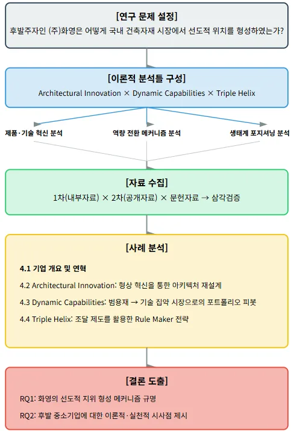
3.5 연구 흐름 도식
4. (주)화영 사례 분석
4.1 기업 개요 및 연혁
4.1.1 창업 배경: 39년 현장 경험이 만든 혁신 기업
(주)화영의 출발점은 창업자 박봉제 대표의 25년에 걸친 건축자재 업계 경험이다.
박봉제 대표는 1987년부터 2011년까지 국내 PVC 창호 관련 대기업에서 최종직위 본부장으로 근무하며 건축자재 시장의 구조, 수요 패턴, 고객 네트워크를 현장에서 직접 체득하였다. 이 기간 동안 축적된 시장 지식과 거래처 네트워크는 창업 직후 시장 진입 리스크를 최소화하는 핵심 자원으로 기능하였으며, "독자적인 기술과 제품을 갖춘 회사를 만들겠다"는 목표가 화영 창업의 동력이 되었다(이종구, 2025).
4.1.2 기업 현황
2011년 12월 5일 설립된 (주)화영은 경량 철골 전문 제조기업으로, 본사는 서울특별시 송파구에 위치하며 경기도 이천(1공장)과 경기도 화성(2공장)에 생산 설비를 운영한다. 2025년 기준 임직원 수 45명, 매출 202억 원의 강소기업이다 (화영, 2026).
<표1> (주)화영 기업 개요
출처: 화영 내부자료(2026) 재구성
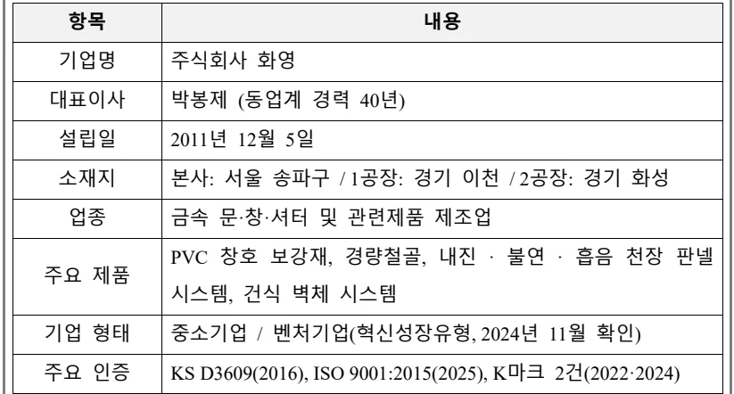
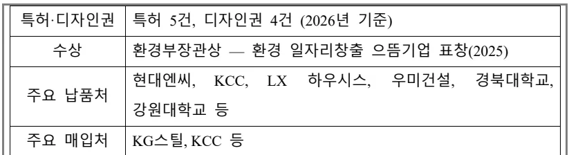
<표2> 1단계 주요 재무 · 사업 성과
출처: 화영 내부 결산 자료(2012-2014), 재무제표 기반 재구성 (Appendix C 참조)
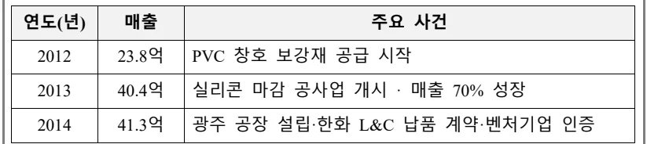
<표3> 2단계 주요 재무 · 사업 성과
출처: 화영 결산 자료(2015-2019), 재무제표 기반 재구성 (Appendix C 참조)
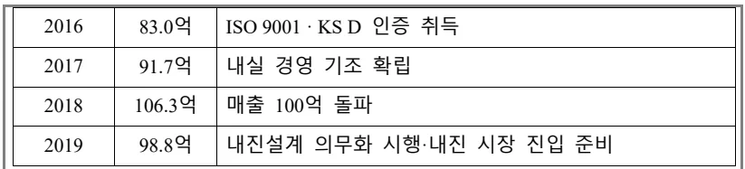
<표4> 3단계 주요 재무 · 사업 성과
출처: 화영 결산 자료(2020-2025), 재무제표 기반 재구성 (Appendix C 참조)
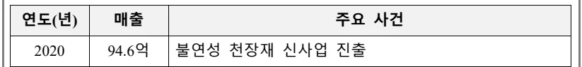
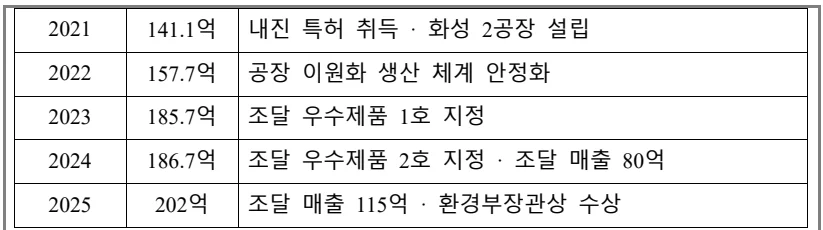
<그림12> (주)화영 기업 연혁 및 매출·조달 매출 성장 추이
(출처: 화영 내부자료(2026) 저자 재구성.)
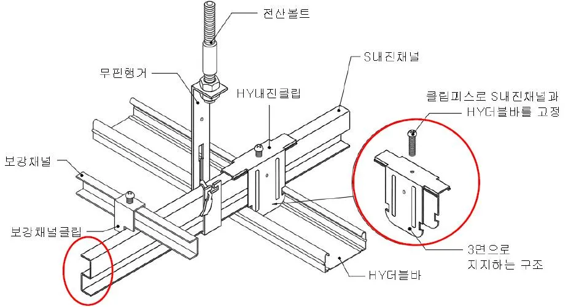
<표5> (주)화영 연도별 재무 성과 종합 (2012~2025) *기밀 사항 제외
출처: 화영 내부 결산 자료 및 수주 통계 기반 재구성(2025), 단위: 억원 / 인원:
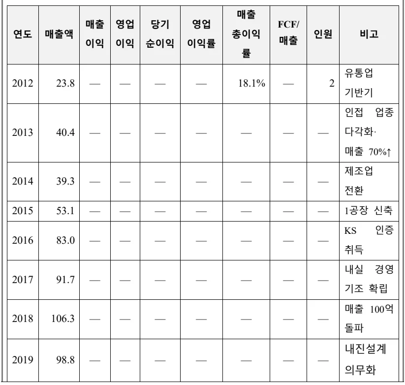
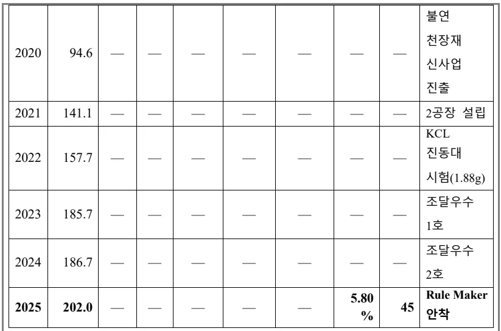
화영의 핵심 사업 구조적 특이점은 제조와 직접 시공의 일체형 운영이다. 대부분의 경쟁사가 제품 생산 후 하수급자에게 시공을 위탁하는 방식을 채택하는 것과 달리, 화영은 제조 · 시공을 직접 수행한다. 이 구조는 현장에서 발생하는 시공 페인포인트(Pain Point)를 제품 개발 및 설계에 역방향으로 반영하는 것을 가능하게 하며, 동시에 시공 품질 통제력과 원가 경쟁력을 확보하는 기반이 된다. 4.2~4.4에서 분석하는 화영의 혁신은 모두 이 제조-시공 일체형 구조를 전제로 작동한다.
4.1.3 성장 궤적: 3단계 전략적 전환
(주)화영의 15년 성장 궤적은 단순한 외형 확대가 아니라 세 차례의 질적 전환을 거쳐 형성된 것이다. 각 단계는 이전 단계에서 축적한 역량을 기반으로 다음 단계로 이동하는 연속적 구조를 보이며, 건설 경기 침체와 원자재 가격 상승이라는 외부 환경 변화 속에서, 일시적 매출 조정 구간을 포함하더라도 전체 궤적은 일관된 우상향을 유지하였다. 1단계(2011~2014): 유통 기반 구축 및 제조업 전환 창업 직후 PVC 창호 고정물 유통업으로 시작하여 2012년 말 매출 23.8억 원, 직원 2명 체제를 확립하였다. 2013년에는 인접 업종인 실리콘 마감 공사업을 추가하며 초기 사업 다각화를 시도하였고 현장 관리 인력 2명을 충원하며 매출 70% 성장(40.4억 원)을 달성하였다. 2014년 경기도 광주에 자체 공장을 설립(2014년 8월)하여 PVC 창호 보강재 직접 생산을 개시하였으며 국내 PVC 창호 메이커 대기업(한화 L&C)과의 납품 계약 체결로 안정적인 대량 수요를
4.1.4 성과 종합: 흑자 지속과 수익 구조의 질적 전환
화영의 14년 성장 궤적이 갖는 재무적 핵심은 두 가지로 요약된다. 첫째, 데스밸리 구간(2014~2016년)과 범용재 한계 구간(2019~2020년) 등 두 차례의 매출 압박 구간을 포함하여 단 한 해도 영업이익 적자 없이 흑자를 지속하였다. 둘째, 조달 진입 이후 외형 성장과 수익 구조의 질적 전환이 동시에 달성되었다.
특히 주목할 점은 매출총이익률(GPM)의 V자형 반등이다. 11.0%(2023)에서 19.7%(2025)로의 급등은 단순한 수익 개선이 아니라, 화영이 저가 수주 경쟁이 치열한 범용재 시장(Red Ocean)을 탈피하여 독자적 기술력을 바탕으로 가격 결정권을 확보하는 경기장 교체(Arena Shifting)가 재무적으로 완성되었음을 보여주는 실증적 증거다.
FCF/매출은 1.20%(2022)에서 5.80%(2025)로 개선되어 현금 창출 능력이 구조적으로 향상되었다. 이는 단순한 매출 증가가 아닌 사업 모델 전환의 결과다.
업종 평균 대비로도 부채비율(123.1%, 업종평균 138.6% 대비 우수), 이자보상배수(4.17배, 업종평균 2.42배의 약 1.7배)에서 업계 평균을 상회하는 재무 건전성을 유지하고 있다(화영 내부자료, 2025). 화영의 연도별 재무 성과 전체는 <표5>에서 확인할 수 있다.
명 (Appendix C 참조) *2025년 매출액은 수주 및 계약 총액 기준이며, 비율 지표는 실제 발생한 매출액(188.2억)과 매출이익(37.1억), 영업이익(9.7억)을 기반으로 산출됨 [기술·인증 성과] 특허 5건 · 디자인권 4건의 지식재산권 포트폴리오와 K마크 2건(2022 · 2024), KS D3609, ISO 9001:2015의 인증 체계는 조달 시장 진입의 기술적 신뢰성을 뒷받침한다. 특히 석고텍스 마감재 기반 내진 천장 시스템에서 조달 우수제품 단독 지정이라는 지위는 경쟁사가 단기간에 복제할 수 없는 제도적 자산이다. 조달 우수제품 경쟁 업체인 무진기업(내진성능 1.20g) 및 제이엔티(내진성능 1.00g) 대비 화영(1.88g)의 내진 성능 우위는 이 제도적 지위를 기술적으로 뒷받침한다. 나아가 화영의 경쟁력은 성능에 국한되지 않는다.
현장설치도 기준 49,000원/㎡의 가격은 경쟁 우수제품(73,000원 · 72,483원) 대비 약 33% 낮은 수준이며, 이는 S-Channel 아키텍처 도입을 통한 시공 공정 단축과 인건비 절감이 결합된 결과로, 2026년 상반기 표준품셈 대비 46%의 원가 절감이 실현된 것이다(화영, 2026). 성능 최고 · 가격 최저라는 이 이중 우위는 4.2에서 분석하는 Architectural Innovation의 핵심 성과이며 경쟁사가 단기간에 복제하기 어려운 구조적 경쟁력의 원천이다. [시장 성과] 조달 매출은 진입 첫 해(2024) 80억에서 2025년 115억으로 64% 성장하였으며, 내진 천장재 공공 조달 시장(약 2,500억 원) 내 화영의 점유율은 약 15~18%로 추정된다. 특히 석고텍스 기반 내진 우수제품 세부 품목에서는 70% 이상의 지배적 점유율을 기록하고 있다(조달청 2025b; 화영, 2026). 경북대학교 · 강원대학교 등 교육기관을 포함한 공공기관 납품 실적은 화영이 목표한 공공조달 시장에 성공적으로 진입하였음을 실증한다. [사회적 성과] 직원 수 1명(2011)에서 45명(2026)으로 약 45배 성장하였으며 2025년 환경부로부터 일자리창출 으뜸기업으로 선정되어 환경부장관상을 수상하였다. 이는 화영의 성장이 기술 혁신과 고용 창출이라는 두 가지 사회적 가치를 동시에 실현하고 있음을 정부가 공식적으로 인정한 것이다.
<표 6> 화영 주요 연혁 및 기술 협력 현황
출처: 화영 내부자료(2026), 조달청(2025a; 2025b) 저자 재구성
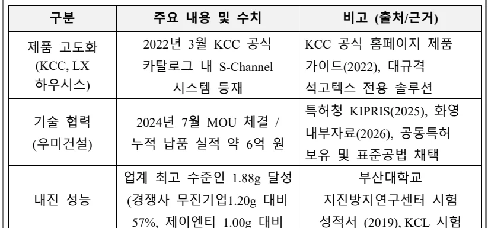
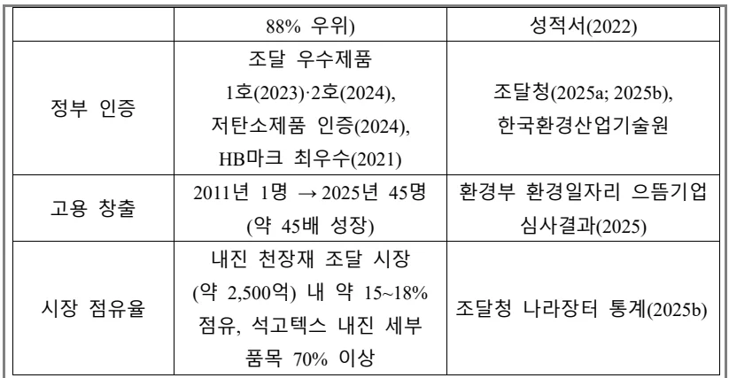
<표7> 조달청 우수제품 내진 천장재 경쟁 비교 (2025년 기준)
출처: 조달청(2025a; 2025b), 화영 내부자료(2026) 재구성
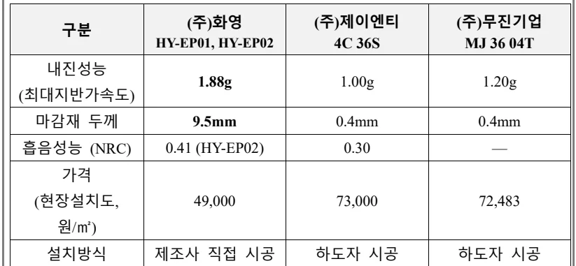
<표8-1> 천장 시스템 및 내진 기술 관련 지식재산권 현황
출처: 특허정보넷 KIPRIS 및 (주)화영 내부자료(2026) 재구성
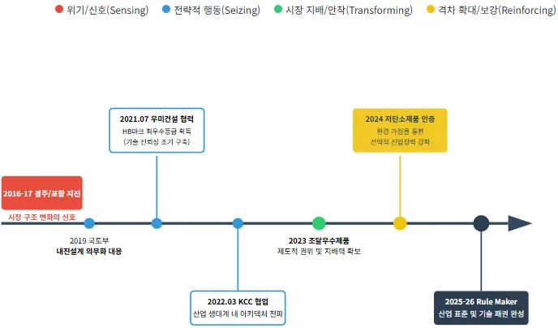
이상의 성과는 화영이 단순한 제품 공급자를 넘어 기술 · 제도 · 파트너십을 유기적으로 결합한 Rule Maker 로 전환하였음을 실증하며 이하 4.2~4.4 에서 그 메커니즘을 이론적으로 분석한다.
4.2 Architectural Innovation: 형상 혁신을 통한 아키텍처 재설계
4.2.1 혁신의 배경: 뿌리산업 기반 형상 공학
화영의 형상 혁신이 태동한 배경에는 건설 현장의 구조적 과제가 자리하고 있다. 건설 현장에서 지속적으로 화두가 되어 온 것은 안전·내진·불연과 함께, 자재비·인건비·공기(工期) 단축을 통한 공사 원가 절감이다. 화영은 제품 생산과 직접 시공을 동시에 수행하는 기업 구조 덕분에, 현장에서 발생하는 불편함과 애로사항을 제품 개발의 아이디어로 직접 전환할 수 있는 위치에 있었다. 이 과정에서 화영이 채택한 접근법의 근간은 금형 · 롤포밍 · 프레스 등 금속 가공의 뿌리기술이다. 기존 생산 인프라와 범용 자재를 그대로 활용하되, 그 형상과 연결 방식을 최적화함으로써 성능을 높이고 시공을 단순화한다는 방향이다. 이 접근의 효과는 세 층위에서 동시에 실현된다. 자재 투입량 최적화에 따른 자재비 절감, 시공 구조 단순화에 따른 공기 단축과 인건비 절감, 그리고 이 두 효과가 결합된 총 공사 원가 절감이다. 이 효과는 수치로 검증된다. S-Channel 아키텍처 도입을 통해 기존 5단계 시공 공정이 3단계로 단축되었으며, 인건비 및 공기 단축 효과가 결합되어 2026년 상반기 표준품셈 대비 46%의 원가 절감이 실현되었다(화영, 2026). 나아가 공사 원가 절감은 건설사의 분양가 인하로 연결될 수 있어, 최종 소비자에게까지 그 효익이 전달되는 가치 사슬 전반의 혁신으로 확장된다. 화영의 대표 성과인 경량철골 천장재(국내 최고 내진성능, 조달청 우수제품 지정)와 건식 벽체 시스템(우미건설 공동특허)은 모두 이 형상 공학 플랫폼에서 파생된 결과물이다.
4.2.2 화영의 형상 혁신 전략
(1) 혁신의 본질: '형상 혁신(Form Innovation)' 화영의 기술 혁신을 이해하기 위해서는 먼저 그 본질적 성격을 규정해야 한다. 화영의 혁신은 화학적 신소재 개발이 아닌 기계적 구조 변경을 통한 성능 향상, 즉 '형상 혁신(Form Innovation Technology)'으로 요약된다(화영, 2026). 이미 시장에서 검증된 범용 자재(아연도금강판, 범용 클립)를 활용하되 그 형상과 연결 방식을 최적화하여 시스템 전체의 성능을 비약적으로 향상시키는 전략이다. 이 접근 방식은 중소 기업으로서의 자원 제약에 대한 합리적이고도 의도적인 결정이었다. 고비용의 소재 개발 R&D는 실패 시 회복이 어려운 매몰 비용을 발생시키는 반면, 형상 혁신은 기존 생산 설비를 유지하면서도 제품 성능과 시공 효율을 동시에 개선할 수 있다. 이를 화영 내부에서는 '자원 거부성 (Resource Refusal)'—신소재 개발이라는 고비용 리스크를 전략적으로 거부하고 기존 자원을 재배치하는 효율적 혁신—으로 개념화한다(박봉제, 2026). 이 개념은 단순한 비용 절감의 논리가 아니라 중소기업이 대기업과의 자원 격차를 우회하여 혁신 속도를 높이는 전략적 선택임을 명확히 한다. (2) 혁신의 원천: 현장 기반 역설계 (Reverse Innovation) 화영 형상 혁신의 핵심 원천은 제조와 시공을 동시에 보유한 기업 구조에서 비롯되는 현장 기반 역설계(Reverse Innovation)다(Immelt et al., 2009). 일반적인 R&D 프로세스가 실험실에서 제품을 개발한 후 현장 적용을 시도하는 방향으로 진행되는 것과 달리, 화영은 시공 현장에서 발생하는 페인포인트(Pain Point)를 수집하고 이를 제품 설계에 역방향으로 반영하는 프로세스를 채택하고 있다(박봉제, 2026). 이 프로세스에서 핵심적인 것은 암묵지(Tacit knowledge)의 형식지화(Explicit knowledge)다. Nonaka & Takeuchi(1995)는 조직 내 지식 창조가 암묵지와 형식지의 상호 전환을 통해 이루어진다고 주장하였다. 화영의 경우, 시공 현장에서만 발견되는 '클립 풀림', '시공 복잡성', '자재비 과다' 등의 현장 경험(암묵지)이 제품의 물리적 도면과 특허 명세서(형식지)로 전환된다. 이 전환 과정이 화영의 혁신이 외부에서 모방하기 어려운 이유이기도 하다. 현장 경험의 축적은 화영 고유의 암묵지이며 이를 형식지로 전환하는 역량 자체가 화영의 핵심 조직 역량이다. (3) 기존 방식의 구조적 한계와 화영의 솔루션 <천장재> 기존 경량철골 천장재 시장에서 지배적 설계(Dominant design)는 더블엠바클립 (Double M-Bar Clip) 방식이었다. 이 방식에서 클립은 캐링 채널(Carrying Channel)에 삽입된 후 손으로 눌러 고정되는 단순 거치 구조였다. 이 구조는 시공 편의성 측면에서는 최적화되어 있었으나, 지진 발생 시 수평 방향의 반복 하중에 대한 저항력이 근본적으로 취약하였다(박봉제, 2026). 클립과 채널의 접촉면이 단순 면 접촉(Surface contact)에 불과하여 진동이 가해지면 쉽게 풀리고 이는 천장 시스템의 붕괴로 이어졌다. 2016년 경주와 2017년 포항 지진에서 보고된 천장 붕괴 피해(총 29,393건)는 이 구조적 한계의 실증이었다. 화영의 솔루션은 두 층위의 아키텍처 재설계로 구성된다. ① S-Channel 형상 혁신 기존의 단순 C자형 또는 U자형 단면 채널을 S자형으로 재설계하였다. 단면 형상이 S자로 변경되는 순간, 구조 강도가 C자형 대비 2.6배 증가하며(KCL, 2022), 클립과의 접촉 면적과 결착 방식이 근본적으로 달라진다. S-Channel은 3면이 'ㄷ'자 구조인 내진 클립 안에 삽입되어 맞물리는 구조를 형성하며 이 삽입 구조는 수평 방향의 외력에 대해 기계적 잠금(Mechanical locking) 효과를 제공한다.
이는 개별 부품의 강도보다 부품 간의 상호작용(Component interaction)을 극대화하여 시스템 전체의 최대 지반 가속도(지진에서 지면이 가속되는 힘)를 높이는 전형적인 아키텍처 수준의 혁신이다(김가람 2020; 화영, 2026). ② 화영 내진 클립 (건축용 철골프레임 고정 클립) 화영의 두 번째 형상 혁신은 클립 자체의 구조 재설계다. 기존 더블엠바클립은 짧은 형태로 C채널과 2.5면 결합으로 접촉면이 작았다. 이 구조에서는 지진 진동이 가해질 경우 접촉면이 작아 채널이 쉽게 이탈되었고 이것이 지진 시 천장 붕괴로 이어지는 직접적 원인이었다. 화영 내진 클립(디자인등록번호 30-1030167)은 이를 근본적으로 재설계하였다. S-Channel의 3면을 모두 감싸는 구조로, S-Channel이 클립 안에 완전히 삽입되어 맞물리는 방식이다. 소재는 기존과 동일한 아연도금강판이지만, 형상을 3면 감싸는 구조로 바꿈으로써 지진 진동 시 S-Channel의 이탈을 원천적으로 방지한다. ③ 이중 체결 시스템 — 두 혁신의 결합 S-Channel과 내진 클립의 기계적 결합(1차 고정)에 비스(Screw) 체결(2차 고정)을 추가하는 이중 고정 구조를 설계하였다. 또한 천장재를 서로 십자로 교차 배치하는 크로스 결합 구조를 도입하여, 수직 및 수평 방향의 복합 하중에 대한 시스템 전체의 구조적 완결성을 확보하였다. 이 두 혁신의 결합 결과, 화영의 내진형 천장 판넬 시스템은 부산대학교 지진방재연구센터[부산대 지진방재연구센터](2019)와 KCL (한국 건설 생활 환경 시험 연구원) 진동대 시험 (ICC-ES AC156 기준, 2022)에서 최대 지반 가속도 1.88g를 달성하였다. 이 값은 진도 8-9 이상 수준의 지진에도 구조적 안전성을 확보하는 수치로, 동종 조달 우수제품인 무진기업(1.20g) 대비 57%, 제이엔티 (1.00g) 대비 88% 높은 내진 저항력을 보유하고 있다(조달청, 2025b; 박준호·김태윤, 2025).
〈그림13> 기존 더블엠바클립·C형 캐링채널 방식과 화영 내진 클립·S-Channel 이중 체결 방식 비교 (출처: 화영, 2023b.) (4) 조달 우수제품 2종의 기술적 구성 <천장재> 화영의 형상 혁신은 조달청 우수제품으로 지정된 두 가지 시스템으로 구현된다. ① HY-EP01 (내진형 불연 천장 판넬 시스템) KCC와 기술 연계한 석고텍스 PLUS(마감재 두께 9.5mm)를 기반으로 하며 친환경 건축 자재 성적서, 환경성적표지 인증(저탄소제품), 불연 시험성적서를 보유한다.
석고텍스 마감재 시장에서 조달 우수제품으로 지정된 유일한 업체로서, 학교·공공기관 등 가장 광범위하게 사용되는 대중 마감재 시장에서 구현하기 어렵게 만드는 ‘인과적 모호성(Causal Ambiguity)’(Lippman & Rumelt, 1982)을 부여하여 강력한 기술적 진입장벽이 된다. (5) 벽체재로의 기술 확장: 형상 혁신의 수평적 확장 <벽체재> 화영의 형상 혁신은 천장재에 국한되지 않는다. 2024년 10월, 2025년 6월 등록된 '건식벽체용 스터드를 이용한 건식벽체 시공방법' 특허(제10-2024-0145247호, 제10-2820120호)는 화영의 형상 혁신 원리가 벽체재 영역으로 확장된 결과다. 벽체재 기술은 크게 세 가지 방향으로 전개된다.
〈그림14> 건식 벽체재(출처: 화영, 2026) ① 건식 벽체 시공법 기존 습식 공법(벽돌 쌓기 → 시멘트 마감 → 도기타일)이 공기 지연과 습기 문제를 내포하는 구조였다면, 화영은 경량 철골 트러스 구조에 방수 석고보드를 부착하고 PVC 타일로 마감하는 이 공법은 자재비 절감, 공기 단축, 인건비 절감을 통한 총 원가 절감을 실현한다. 이 또한 소재 변경 없이 결합 방식의 재설계만으로 시공 효율과 성능을 동시에 향상시키는 형상 혁신의 연장이다(특허청 2025; 화영, 2026). ② 차음 벽체 기술(시험 성적서 취득 예정, 2026년 하반기) 엘리베이터 홀, 방화구역 등 특수 공간에는 높은 차음 성능이 요구된다. 기존에는 벽돌 구조에 의존하여 자재비와 공기가 과다하게 소요되었다. 화영은 석고보드 2장의 이중 구조와 중간 공기층을 활용하는 아키텍처를 적용하여 차음 효과를 확보하는 동시에 시공 비용을 절감하였다. 이는 소재의 변경 없이 적층 구조와 공기층이라는 연결 방식의 재설계로 성능을 구현한 사례로, 천장재 혁신과 동일한 형상 혁신의 논리가 벽체재 영역에서 반복 적용된 것이다. ③ 복잡 형상 단순화 기술 기존 방화 · 특수 구역용 벽체재는 복잡한 형상으로 인해 자재비 상승과 높은 시공 난이도라는 이중의 문제를 안고 있었다.
화영은 동일한 기능을 발휘하면서도 구조를 단순화하는 형상 재설계를 통해 자재비를 낮추고 시공 편의성을 높이는 해법을 개발하였다. 핵심은 "자재 모양을 바꿔서 우리만 할 수 있도록 만든다"는 원칙이다(박봉제, 2026). 형상 재설계와 시공법을 함께 특허로 출원함으로써, 제품 자체와 설치 프로세스를 동시에 보호하는 이중 진입장벽을 구축하였다. 이는 4.2.3에서 논의하는 IP 망 전략이 벽체재 영역에서도 동일하게 적용되는 방식이다.
<표8-2> 벽체 시스템 및 조립식 구조 관련 지식재산권 현황
출처: 특허청 KIPRIS(2025) 및 화영(2026) 재구성
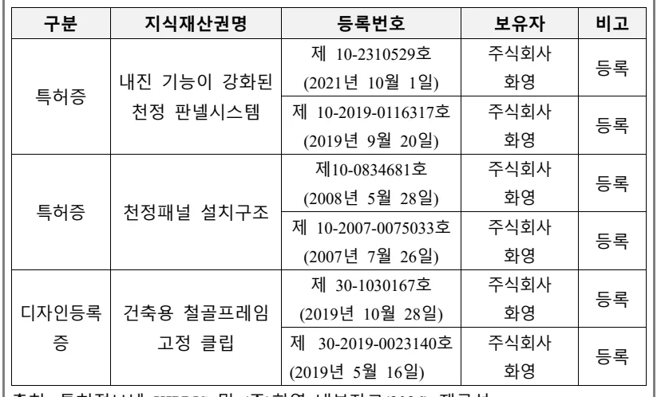
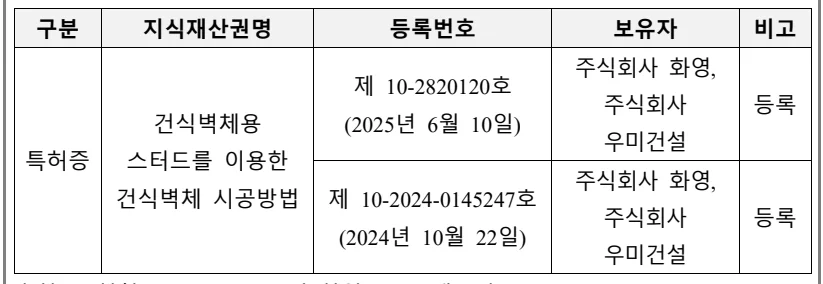
이 세 가지 벽체재 기술은 천장재와 마찬가지로 '뿌리산업 기반 형상 공학' 플랫폼에서 파생된 결과물이며 화영의 혁신 역량이 특정 제품군에 국한되지 않고 건축 내장재 전반으로 확장 가능함을 보여준다.
4.2.3 Architectural Innovation 관점의 이론적 해석
Henderson과 Clark(1990)은 아키텍처 혁신을 ‘구성요소의 핵심 개념은 유지하되 구성요소 간의 연결 방식을 근본적으로 재편하는 혁신’으로 정의하며, 이 혁신 유형이 선발주자의 기존 역량을 무력화하는 메커니즘을 이론화하였다. 본 절에서는 화영의 형상 혁신이 이 정의에 부합하는지를 네 가지 측면에서 논증한다.
<그림15> Henderson & Clark(1990) 혁신 유형 분류와 화영의 위치 (출처:
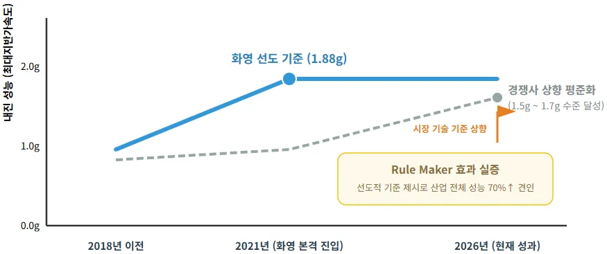
Henderson & Clark의 혁신 유형 분류에서 화영과 경쟁사는 서로 다른 위치에 놓인다. 화영은 구성요소의 기능·용도라는 핵심 개념은 유지하면서 구성요소 간 연결 구조(C형 단면→S형 단면, 단순 거치→이중 체결)를 재편하였으므로, 우상단의 Architectural Innovation으로 분류된다. 이와 대비하여 경쟁사들은 구성요소의 형상 크기를 키우고 연결 구조도 일부 변경하는, 좌상단의 Radical Innovation에 가까운 접근을 시도하였다. 그러나 형상을 크게 할수록 동일 소재의 투입량이 증가하여 자재비 상승이 불가피하고 연결 구조의 근본적 재설계 없이는 이탈 저항력을 충분히 확보할 수 없다는 구조적 한계를 내포하고 있었다. 결과적으로 경쟁사는 더 많은 변화를 시도했음에도 화영 대비 성능은 낮고 화영 대비 원가는 높은 결과로 귀결되었다. 반면 화영은 연결 구조만을 정밀하게 재설계하는 Architectural Innovation을 선택함으로써, 자재 투입량을 늘리지 않고도 경쟁사 대비 높은 내진 성능을 달성하는 동시에 경쟁사 대비 낮은 원가 경쟁력을 확보하였다. 이 연결 구조의 재설계는 특허와 디자인권으로 보호되며, 이에 대한 상세한 논의는 본 절의 넷째 항목에서 다룬다. 이하에서는 화영의 혁신이 Architectural Innovation으로 분류되는 근거를 네 가지 측면에서 순차적으로 논증한다. ① 구성요소 핵심 개념의 유지이다. Architectural Innovation의 첫 번째 조건은 구성요소의 핵심 개념, 즉 각 부품이 수행하는 기능과 용도가 유지되는 것이다. 화영의 혁신에서 클립은 여전히 채널을 고정하는 부품이고, 채널은 여전히 천장 하중을 지지하는 부품이다. 소재 역시 업계 전반에서 사용하는 아연도금강판을 그대로 활용하였다. 핵심 개념의 유지는 단순한 자원 제약의 결과가 아니라, 소재 혁신이라는 고비용 · 고위험 경로를 전략적으로 거부하고 연결 구조의 재설계에 역량을 집중하는 의도적 선택이었다(박봉제, 2026). ② 연결 구조의 근본적 재편이다. Henderson & Clark(1990)은 ‘아키텍처 지식은 구성요소에 내재되어 있지 않고 구성요소들이 어떻게 연결되고 상호작용하는지에 관한 지식’이라고 정의하였다. 화영의 핵심 통찰력은 두 가지 형상 혁신적인 결합에서 나온다. 첫째, C형 단면을 S형으로 바꾸는 작은 형상 변화가 채널과 클립 사이의 접촉 구조값 전체를 바꾼다.
둘째, 짧은 더블엠바클립을 3면 감싸는 화영 내진 클립으로 바꾸는 작은 형상 변화가 이탈 저항력 전체를 바꾼다. 이 두 가지 형상 변화는 각각 독립적으로도 연결 구조를 개선하지만, 결합될 때 S-Channel이 내진 클립 안에 완전히 삽입되어 맞물리는 기계적 잠금(Mechanical locking) 효과를 만들어내고, 시스템 전체의 내진 성능을 비약적으로 향상시킨다. 이것이 Architectural Innovation의 본질 — ‘작은 형상 변화들의 결합이 연결 구조 전체를 재편한다’ — 이 화영을 통해 실증된 지점이다. ③ 선발주자 역량의 경직성(Rigidity) 효과이다. Henderson & Clark(1990)이 지적한 아키텍처 혁신의 핵심 전략적 효과는, 선발주자가 기존 아키텍처에 내재화된 조직 루틴과 지식 구조로 인해 새로운 아키텍처를 인지하거나 대응하는 데 지체된다는 점이다. 유창 · 대한강재 · 대륭 · 신성강건 등 화영보다 규모가 큰 경쟁사들은 경량철골 전 품목을 다품종 대량 생산하는 방식으로 시장을 운영하고 있었다. 이들에게 내진 천장재는 다품종 제품군 중 하나에 불과하며 내진 특화 제품을 위해 금형 · 생산 라인을 별도로 재편하는 것은 내부 의사결정 구조상 우선순위를 부여받기 어렵다. 나아가 내진 천장재는 건물마다 규격이 상이하고 현장 맞춤형 시공이 요구되는 특성상, 다품종 대량 생산과 하수급자 시공 구조에 의존하는 경쟁사들로서는 유연하게 대응하기 어려웠다. 반면 화영은 천장재 · 벽체재라는 특화 제품군에 모든 자원을 집중함으로써, 연결 구조의 재설계라는 방향을 명확히 설정하고 실행할 수 있었다. 결과적으로 범용 자재의 가격 경쟁과 물량 대응에 최적화된 경쟁사들의 생산 시스템에서, 연결 구조를 재설계하는 방향의 혁신은 가시화되기 어려웠다. 이것이 Henderson & Clark(1990)이 명명한 ‘보이지 않는 위협(Invisible threat)’이 화영을 통해 현실화된 사례다. ④ IP 망 전략(Patent Mesh), 즉 전유 가능성의 제도적 완성이다. 앞서 논의한 아키텍처 지식의 재설계는 모방 가능성이라는 취약점을 내포한다. Teece(1986)는 기술 혁신에서 수익을 온전히 획득하기 위한 조건으로 전유 가능성 (Appropriability regime)과 보완적 자산(Complementary assets)의 확보를 제시하였다. 화영의 IP 포트폴리오는 이 두 조건을 동시에 충족하는 방식으로 설계되어 있다. 화영의 특허 체계는 세 층위의 보호망으로 구성된다: 형상 보호(디자인권): S-Channel 형상 및 내진 클립 디자인 (등록번호 30-성능 보호(구조 특허): 자재 간 상호 결합으로 인한 내진 성능 강화 메커니즘 (등록번호 10-2310529)
공정 보호(시공법 특허): 건식벽체 시공방법 (등록번호 우미건설 공동 소유) — 이 특허는 화영의 IP 전략이 천장재에 국한되지 않고 벽체재 영역으로도 확장됨을 보여준다. 이 세 층위의 특허가 중첩된 결과, 경쟁사가 S-Channel 형상을 모방하면 디자인권에, 내진 클립의 결합 방식을 모방하면 구조 특허에, 이를 설치하는 프로세스를 모방하면 시공법 특허에 저촉되는 다중 잠금(Multi-lock) 구조가 형성된다. 이는 Dierickx & Cool(1989)이 제시한 자산 축적의 '시간 압축 불경제 (Time compression diseconomies)' — 모방자가 동일한 결과를 달성하기 위해 투입해야 하는 시간과 자원이 선도자를 초과한다는 원리 — 를 제도적 수단으로 구현한 것이다. 나아가 형상의 곡률과 클립의 탄성 계수가 맞물려 내진 성능이 발현되는 최적의 조합은 특허로 보호되는 동시에 화영만의 현장 노하우로 내재화되어 있어, 경쟁사가 특허를 우회하는 유사 형상을 개발하더라도 동일한 성능을 재현하기 어려운 ‘인과적 모호성(Causal ambiguity)’ 이 존재한다(Lippman & Rumelt, 1982).
4.3 Dynamic Capabilities: 범용재에서 기술 집약 시장으로의 포트폴리오 피봇
4.3.1 전략적 맥락: 경기장(Playing Field)의 교체
화영의 Dynamic Capabilities를 이해하기 위해서는 먼저 화영이 선택한 전략적 맥락을 규명해야 한다. Teece, Pisano & Shuen(1997)은 Dynamic Capabilities를 ‘급변하는 환경에서 내 · 외부 역량을 통합 · 구축 · 재편함으로써 지속 가능한 경쟁 우위를 달성하는 기업의 능력’으로 정의하였다. 이 정의의 핵심은 역량 자체가 아니라 역량을 변화시키는 역량(The ability to change capabilities)에 있다. 화영의 사례가 이 이론과 조응하는 지점은, 화영이 단순히 기존 역량을 개선한 것이 아니라 경쟁하는 시장 자체 — 즉 경기장(Playing field) — 를 교체하는 방식으로 Dynamic Capabilities를 발현하였다는 점이다. 화영이 출발한 범용재 시장은 낮은 진입장벽, 가격 중심 경쟁, 대기업 물량 우위가 지배하는 구조였다. 이 구조에서 자원이 제한된 중소기업이 지속 성장을 달성하는 것은 구조적으로 불가능에 가까웠다. 화영의 Dynamic Capabilities는 이 구조적 제약을 인식하고 기술 · 인증 · 제도가 진입장벽으로 기능하는 기술 집약 Niche 시장으로 경기장을 교체하는 방향으로 발현되었다. 두 시장의 구조적 차이는 아래 표와 같다.
<표9> 범용재 시장과 기술 집약 Niche 시장의 구조적 비교
출처: 본인 작성
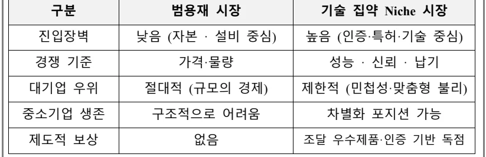
이하에서는 이 경기장 교체 과정을 시간적·논리적 순서에 따라 세 가지 주제로 나누어 Teece(2007)의 Sensing · Seizing · Transforming 프레임으로 분석한다. 창업자의 25년 지식이 초기 기회 인식의 기반이 되었고(4.3.2), 이를 토대로 범용재 한계를 감지하고 Niche 시장으로 이동하는 전략적 방향이 설정되었으며(4.3.3), 친환경 · 무석면이라는 구체적 제품 개발로 실행이 완성되었다(4.3.4).
세 주제가 이 순서로 연동되었기에, 화영의 Dynamic Capabilities는 단발적 혁신이 아닌 누적적이고 자기 강화적인 역량 진화의 형태를 띤다.
<그림16> 화영의 Dynamic Capabilities 단계별 전략 전개 타임라인
(출처: Teece 동적 역량 이론, 2007; 본인 작성)
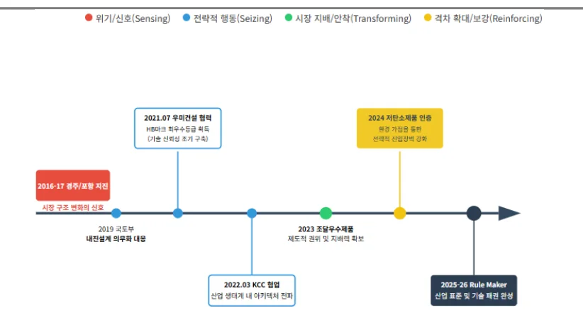
<표 10> 전략적 선택의 차이 비교 분석
출처: 나라장터 종합쇼핑몰(2025) 및 화영 내부자료(2026) 재구성
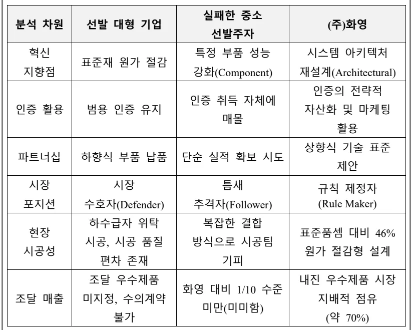
4.3.2 창업자 사전 지식 기반 창업 → 수직 · 수평 포트폴리오 확장
화영의 모든 Dynamic Capabilities 발현을 가능하게 한 근원적 역량은 창업자 박봉제 대표의 25년간 건축자재 영업 경험에 내재된 사전 지식(Prior knowledge)이다. 이 주제는 화영 창업(2011) 시점부터 작동하여, 이후 모든 전략적 선택의 기반이 되었다는 점에서 시간적으로 가장 먼저 위치한다. Sensing 창업자 박봉제 대표는 25년 건축자재 영업 업무를 담당하면서 현장에서 다양한 건축 자재와 시장 흐름을 경험하였다. 이 경험을 통해 "독자적인 기술과 제품을 갖춘 회사를 만들겠다"는 목표를 수립하였으며, 기존 거래처 네트워크와 시장 수요 패턴에 대한 사전 지식이 창업 초기 기회 인식의 핵심 자원으로 작용하였다(박봉제, 2026). Shane(2000)은 창업 기회 인식에서 창업자의 사전 지식이 결정적 역할을 한다고 이론화하였으며 특정 산업에 대한 깊은 사전 지식을 보유한 창업자는 시장 기회를 더 정확하게 식별하고 자원 활용의 효율성을 높인다는 점을 실증하였다. 이는 Teece(2007)가 강조한 기업가적 Sensing — 외부 기회를 내부 역량과 연결하여 해석하는 능력 — 의 전형적 발현이었다. Seizing 이 사전 지식을 기반으로 화영은 현재 사업과 연관된 품목으로 수직·수평 방향의 순차 확장을 실행하였다. PVC 창호 고정물(유통) → PVC 보강재(제조) → 경량철골(동일 기계 활용) → 내진 천장 시스템(기술 고도화) → 건식 벽체(신규 영역)로 이어지는 연속적 경로다. 각 단계에서 기존 역량을 버리지 않고 누적하며, 인접 영역으로만 이동하는 연속적 확장 전략이다. Eisenhardt & Martin(2000)은 Dynamic Capabilities가 단일한 혁신적 행동이 아니라 반복 가능하고 학습 가능한 루틴의 집합임을 논증하였다. 화영의 포트폴리오 확장이 이 논의와 정확히 일치하는 지점은, 설비 추가 투자 없이 기존 기계로 신규 제품을 생산하고 기존 거래처 네트워크를 통해 신제품을 도입하며 각 단계의 성과가 다음 단계의 자원이 되는 구조다. Transforming 이 순차적 확장을 물적으로 뒷받침한 것은 생산 인프라의 단계적 재편이었다. 경기도 이천 1공장(2015) → 화성 2공장(2021)으로 이어지는 공장 설립의 각 단계는 단순한 생산 능력 확충이 아니라, 새로운 사업 영역 진입과 동기화된 전략적 인프라 구축이었다. 2021년 화성 제2공장 설립은 내진 시스템 본격 생산을 위한 물적 기반을 마련한 것으로, 1공장(이천 · PVC 보강재 · 경량철골)과 2공장(화성 · PVC 브라켓 · 내진 시스템)의 이원화 생산 체계가 포트폴리오 확장을 구조적으로 뒷받침하게 되었다. Teece(2007)가 Transforming 단계에서 강조한 자산 재배치(Asset reconfiguration) — 기존 역량의 한계를 극복하고 새로운 성장 경로를 확보하는 것 — 가 화영에서는 공장 설립의 각 단계와 사업 확장의 각 단계가 정확히 동기화되는 방식으로 구현되었다.
4.3.3 범용재 한계 감지 → Niche 기술 집약 시장 전환
창업자 사전 지식이 화영의 모든 Dynamic Capabilities 발현의 근원적 기반이었다면, Niche 시장 전환은 그 기반 위에서 화영이 경기장 교체를 전략적 수준에서 설계한 핵심 의사결정이었다. 내진설계 의무화(2019)를 전후한 이 전환은, 4.3.1에서 제시한 경기장 교체 논리가 가장 직접적으로 구현된 사례다. Sensing 화영의 Niche 전환에서의 Sensing은 범용재 시장의 구조적 한계와 대기업 사각지대의 동시 인식에서 출발하였다. 낮은 진입장벽으로 인한 가격 경쟁 심화, 원가 절감 한계 도달, 박리다매형 가격 경쟁 시장 중심의 구조에서 중소기업의 지속 성장은 구조적으로 불가능하다는 판단이었다. 동시에 화영은 대기업이 대응하기 어려운 Niche 시장의 존재를 포착하였다. 이 시장은 네 가지 조건이 중첩된 공간이었다. 첫째, 다품종 · 소량 · 현장 맞춤형 제품 수요가 지배적이며, 둘째, 고도의 공정 정밀도 · 단면 설계 역량이 요구되고, 셋째, 규제 준수 수준이 높아 진입장벽이 크며, 넷째, 고객과의 신뢰·납기 대응이 중소기업 강점과 일치하는 구조였다. 화영은 이 네 조건이 겹치는 지점 — 내진형 경량철골·특수 단면 보강재 · 맞춤형 제작 시장 — 을 선점 가능한 Niche 공간으로 식별하였다. Seizing 이러한 Sensing을 바탕으로 화영은 기술 · 인증 중심 혁신 시장으로 전략적 이동을 실행하였다. K마크 · 특허 · 조달청 우수제품 등 높은 인증 장벽을 역으로 진입장벽으로 활용하는 역발상이 핵심이었다. 안전 · 성능 중심 원가 구조를 설계하고 조달청 우수제품 기반의 독점적 시장 지위를 확보하며 정부의 정책 · 법규에 따라 향후 펼쳐질 시장을 포착하여 경쟁사가 들어올 수 없는 포지션을 선점하는 방식이다. 화영의 Niche 전략은 두 축으로 구성된다. 하나는 특성 기능 특화 제품 — 지진 · 화재에 견디는 내진 · 불연 특화 제품군 — 이며, 다른 하나는 특정 고객군 — 공공기관 · 학교 · 국가 및 지방자치단체 — 에 대한 집중이다. 이 두 축의 결합이 2023년 하반기 조달청 매출 발생으로 가시화되기 시작한 과정은, Teece(2007)가 강조한 Seizing의 핵심 — 새로운 비즈니스 모델을 설계하고 보완적 자산을 결합하여 경쟁 우위의 지속 가능성을 확보하는 역량 — 의 실증이다. Transforming 이 포지셔닝 전략은 조직 운영 방식의 근본적 재편을 동반하였다. 화영은 소규모 조직의 민첩성을 유지하면서도 MES (생산관리) · WMS (창고관리) · QMS (품질관리) 시스템을 도입하여 품질 · 납기 · 재고의 데이터 기반 관리 체계를 확립하였다. 개인기에 의존하던 운영 방식을 조직 역량으로 내재화한 이 전환은, 다품종 소량 생산과 긴급 납기 대응이라는 Niche 시장의 핵심 요구를 시스템으로 충족시키는 기반이 되었다. 나아가 직접 시공 시스템을 구축하여 자원을 재배치함으로써 하수급자 시공 구조 대비 원가 경쟁력과 품질 통제력을 동시에 확보하였다. Helfat et al.(2007)이 강조한 Dynamic Capabilities의 Transforming — 기업의 운영 루틴 자체를 새로운 환경에 맞게 재구성하는 역량 — 이 화영에서는 스마트 팩토리화와 직접 시공 체계 구축이라는 구체적 조직 변화로 구현되었다. 이 조직 변화의 결과는 재무 성과로 나타난다. 매출총이익률은 9.48%(2022)에서 FCF/매출은 1.2%(2022)에서 5.8%(2025)로 개선되었다(화영, 2026). 외형 성장보다 체질 개선을 선택한 의도적 전환의 결과다. 특히 이러한 체질 개선의 성과는 재무 데이터상의 매출총이익률(GPM) 변화로 실증된다.
제조업 전환기인 2018년(11.29%)과 내진 시장 진입 초기인 2021년(8.29%)에 하락세를 보였던 수익성 지표는, 조달 우수제품 지정을 기점으로 반등하여 2025년 19.71%까지 가파르게 상승하였다. 이는 범용재 시장의 소모적인 가격 경쟁에서 탈피하여, 기술 장벽 기반의 고부가가치 Niche 시장으로 '경기장 교체'에 성공했음을 보여주는 결정적 증거이다.
4.3.4 친환경·무석면 전환
창업자 사전 지식이 근원적 기반을, Niche 시장 전환이 전략적 방향을 제시했다면, 친환경·무석면 전환은 화영의 경기장 교체가 구체적 제품 개발로 완성된 실행 단계다. 2021년 이후 본격화된 이 전환은, 앞선 두 주제에서 축적된 역량이 새로운 시장 수요와 결합하여 구현된 Dynamic Capabilities의 최종 발현이다. Sensing 화영이 친환경·무석면 전환의 필요성을 인식한 출발점은 석면이라는 소재가 내포한 복합적 위험이었다. 석면은 1급 발암물질로 2009년 이후 건축 자재로의 사용이 전면 금지되었으나, 과거 건축물에는 여전히 광범위하게 잔존하고 있었다. 정부 조사에 따르면 전국 유치원 · 초중고등학교 중 약 22%가 여전히 석면 천장재를 사용하고 있었으며(소성렬, 2025), 이는 학습 환경 내 유해 물질 노출이라는 직접적 위협과 함께 막대한 폐기 처리 비용 및 절차의 복잡성이라는 구조적 부담을 학교 현장에 지우고 있었다. 화영은 이 상황에서 정부가 2027년까지 교육시설 내 석면 천장재를 친환경 자재로 전면 교체하는 정책을 추진 중이라는 신호를 조기에 포착하였다. Teece(2007)가 정의한 Sensing — 기술 · 규제 · 사회적 변화에 대한 기업의 능동적 탐색과 해석 능력 — 의 관점에서, 화영은 이 정책 신호를 단순한 규제 강화가 아닌 선제적으로 대응한 기업에게 대규모 교체 수요가 창출될 것임을 예고하는 시장 재편의 신호로 해석하였다. Seizing 이러한 Sensing을 바탕으로 화영은 석면 대체 친환경 건축 자재 · 불연 · 흡음 · 내진 천장재 개발에 회사의 역량을 집중하는 결정을 내렸다. 박봉제 대표이사는 당시를 이렇게 회고한다. "중소기업 입장에서 연구 인력과 개발비를 투입하는 것은 쉽지 않은 결정이었습니다.
그러나 친환경·내진·불연·흡음
성능을 동시에 갖춘 천장 시스템을 만드는 것이 목표였습니다."(박봉제, 2026) 단순한 석면 대체가 아닌, 교체 수요와 안전 수요를 동시에 충족하는 통합 솔루션을 지향한 이 결정은 Teece(2007)가 강조한 Seizing의 핵심 — 포착된 기회를 실제 사업화하기 위해 자원을 동원하고 투자 의사결정을 내리는 역량 — 의 실증이다. 그 결과 2023년 국내 최초 '무석면 내진형 천장 패널 시스템'을 개발하고 조달청 우수제품으로 지정받았다. 이 제품이 석면 대체 친환경 자재이면서 동시에 내진 · 불연 · 흡음 3대 성능을 통합한 구체적 기술 내용은 4.2.2에서 상세히 서술한 바와 같다. Transforming 이 전략적 Seizing은 조직 차원의 변화를 수반하였다. 화영은 친환경 제품 개발과 병행하여 지속적인 고용 확대를 추진하였으며 창업 당시 1명으로 시작한 화영은 2026년 현재 45명으로 성장하였다. 단순한 인력 확대를 넘어, 화영은 2025년 5,000만 원 규모의 사내 복지기금을 조성하여 직원 주택자금· 의료비·학자금 지원 등 실질적 복리후생을 시행하고 있다(소성렬, 2026). 박봉제 대표이사는 "기업 성장의 원천은 결국 사람과 혁신"이라며 이공계 연구개발 전담팀 구성과 청년 인재 채용 확대를 지속 추진하고 있다(소성렬, 2026). 이러한 인적 자원에 대한 과감한 투자는 단순한 복리후생을 넘어 기술 경쟁력의 원천으로 기능한다. 시공을 하수급자에게 위탁하는 경쟁사 구조에서는 동일 제품을 사용하더라도 내진 성능이 균일하게 발현되지 않는다. 반면 화영은 실질적 복리후생을 통해 숙련 인력을 내재화하고 자산화함으로써 기술 경쟁력의 연속성을 확보하였다 — 복지가 곧 기술 경쟁력이 되는 구조다. 근로 환경 개선과 친환경 제품 생산이라는 사회적 가치 창출을 동시에 실현한 성과는, 4.4.1에서 후술하는 바와 같이 2025년 환경부 일자리창출 으뜸기업 수상으로 이어진다. Teece(2007)의 Transforming이 기존 자원 배치와 조직 구조를 새로운 전략에 맞게 지속적으로 재편하는 역량을 의미한다면, 화영의 이 변화는 시공 품질의 표준화를 위한 자산 재구성(Asset Orchestration)이자, 기술 혁신의 방향과 조직 성장의 방향이 동기화된 Transforming의 전형적 사례다.
4.3.5 Dynamic Capabilities 관점의 이론적 해석
본 절에서는 분석한 화영의 Dynamic Capabilities 발현을 이론적으로 종합하고, 기존 이론 대비 화영 사례가 갖는 이론적 의미를 논증한다. ① Sensing의 이중 경로: 제도적 신호와 사전 지식의 수렴 Teece(2007)는 Sensing을 기업이 기술 · 시장 · 규제 환경의 변화를 탐색하고 해석하는 능력으로 정의하였다. 화영의 Sensing이 주목할 만한 지점은, 두 가지 경로의 신호가 동시에 작동하며 동일한 혁신 방향으로 수렴한다는 점이다. 첫 번째는 제도적 Sensing이다. 내진설계 의무화, 석면 교체 정책 등 정부가 설계한 제도적 신호를 선제적으로 포착하는 방식이다. 두 번째는 창업자의 사전 지식 기반 Sensing이다. 25년 간의 현장 경험에서 축적된 시장 지도(Mental map)가 기회 인식의 핵심 자원으로 기능하는 방식이다. Zollo & Winter(2002)는 조직 학습이 경험의 축적에서 시작된다고 논증하였으며 화영의 사전 지식 기반 Sensing은 이 논의의 실증 사례로 해석된다. 이 두 경로의 신호가 동일한 방향 — 기술 특화 · 인증 기반 · Niche 시장 — 을 가리켰다는 점이 화영의 의사결정 속도를 높이는 핵심 요인이었다. ② 자원 레버리지형 Seizing: 자원 제약을 우회하는 중소기업 전략 Teece(2007)의 Seizing 논의는 충분한 자원을 보유한 기업이 기회를 사업화하는 과정을 전제하는 경향이 있다.
그러나 화영의 Seizing은 자원이 제한된 중소기업이 제도적 자산을 레버리지하여 내부 자원의 한계를 우회하는 방식으로 전개되었다. 높은 인증 장벽을 역방향 진입장벽으로 활용하고 조달청 우수제품 제도를 통해 영업 · 마케팅 비용 없이 수요처에 접근하며 기존 설비를 이용하여 신규 제품을 생산하는 방식이 그것이다.
이는 Eisenhardt & Martin(2000)이 논의한 Dynamic Capabilities의 맥락 의존성 — 동일한 역량이라도 기업의 자원 상황과 환경에 따라 발현 방식이 달라진다는 원리³¹ — 이 중소기업 맥락에서 구체화된 형태다. ③ 복리 구조 Transforming: 각 전환이 다음 전환의 기반이 된다 화영의 Transforming에서 주목할 특성은 각 단계의 조직 변화가 누적되어 다음 단계의 Transforming을 가능하게 하는 복리 구조다. 범용재에서 경량 철골로의 전환이 내진 시스템 개발의 설비 기반이 되었고, 스마트 팩토리화가 다품종 소량 생산 체계의 기반이 되었으며 이원화 생산 체계가 포트폴리오 확장의 물적 토대가 되는 구조다. 이 복리 구조의 재무적 결과는 명확하다. 앞서 4.3.3에서 서술한 바와 같이, 매출총이익률은 9.45%(2022)에서 19.71%(2025)로, FCF/매출은 1.2%(2022)에서 5.8%(2025)로 개선되었다 (화영, 2026). Helfat et al.(2007)은 Dynamic Capabilities의 ‘경로 의존성(Path dependence)’이 지속 가능한 경쟁 우위의 원천임을 논증하였다. 화영의 Transforming은 이 논의에서 말하는 경로 의존적 역량 축적의 전형으로, 각 전환이 다음 전환의 가능성을 열어주는 방식으로 누적되어 왔다. ④ 이론적 기여: 후발 중소기업의 경기장 교체형 Dynamic Capabilities Teece(2007)의 원형 이론이 ‘어떻게 역량을 변화시키는가’를 설명했다면, 화영의 사례는 ’자원이 제한된 후발 중소기업이 어떻게 경기장 자체를 바꿔 Dynamic Capabilities를 발현할 수 있는가’라는 새로운 질문에 답한다. 화영은 대기업과의 정면 대결 대신 경기장을 교체함으로써 자신의 강점이 경쟁 우위로 전환되는 구조를 스스로 설계하였다. 이중 Sensing으로 기회를 정확히 포착하고 자원 레버리지형 Seizing으로 제약을 우회하며 복리 구조 Transforming으로 역량을 누적한 이 세 가지 메커니즘의 결합이, 자원이 제한된 후발 중소기업의 지속 가능한 경쟁 우위 창출을 가능하게 한 Dynamic Capabilities의 핵심이다.
4.4 TIS: 산업 표준 설계자로의 전환
4.4.1 화영의 생태계 포지셔닝 전략
시장 점유와 Dominant Design 교체의 동시 추구 Hekkert et al.(2007)의 TIS 모델에서 시스템 기능의 활성화 주체는 통상 대기업 또는 정부로 전제된다. 화영의 사례는 이 전제에 정면으로 도전한다. 화영은 연구기관(KCL) · 정부(국토부 · 교육부 · 조달청 · 환경부) · 대형 건설사 (우미건설) · 대형 자재사(KCC · LX하우시스)의 4개 행위자 축과의 전략적 연계 속에서, 시스템 기능의 수혜자가 아닌 능동적 활성화 주체(Proactive activator)로 기능하였다. 이 4축 구조가 작동하게 된 배경에는 기존 시장 표준의 균열이 있다. 경량철골 천장재 시장에서 오랫동안 지배적 설계로 기능하던 더블엠바클립(Double M-Bar Clip) 방식은 2016~2017년 연속 지진으로 구조적 결함이 공개적으로 드러났고 국토부(2019)
· 교육부(2020)의 내진설계 의무화는 이 결함을 법으로 공식화함으로써 기존 Dominant Design을 제도적으로 무력화하였다. 이는 TIS의 시장 형성(Market formation) 기능이 정부 규제를 통해 외생적으로 촉발된 사례다. 이 전환의 국면에서 화영의 TIS 전략은 두 가지 목표를 동시에 추구한다. 첫째는 조달 우수제품 지정을 기반으로 한 공공 시장 점유이고 둘째는 자사의 S-Channel 아키텍처를 산업 표준으로 확산시키는 Dominant Design 교체다. 4개 행위자 축은 정당성 확보 · 시장 형성 · 지식 확산 · 긍정적 외부효과 창출이라는 TIS 시스템 기능을 각각의 방식으로 담당하며, 그 연동이 화영을 단순한 제품 공급자에서 산업 표준 설계자로 전환시킨 메커니즘이다. (축 1) 연구기관: KCL (한국건설생활환경시험연구원) 이 협력은 세 가지 방향으로 전개된다. 첫째, NEP(신제품인증) 인증용 성능 검증을 공동 수행 중이다. NEP는 국내에서 최초로 개발되었거나 기존 제품을 혁신적으로 개선한 제품에 부여되는 인증으로, 공공기관의 우선 구매와 조달 시장 진입을 제도적으로 지원한다. 화영은 이 인증을 통해 형상 혁신 기반 제품의 안전성 · 성능에 대한 공인 검증 체계를 확보하고자 한다. 둘째, NET(신기술인증) 인증을 위한 원천기술 실증을 병행하고 있다. NET는 국내에서 최초로 개발된 기술 또는 기존 기술을 혁신적으로 개선한 기술에 부여되는 인증으로, 기술 혁신성 자체를 제도적으로 검증 · 인증화하는 경로다. 화영의 S-Channel 형상 혁신과 이중 체결 시스템이 이 인증의 대상이 될 수 있으며, 취득 시 기술력의 객관적 입증 근거로 기능한다. 셋째, KCL과의 공동특허 개발 추진이다. 시험 · 인증 과정에서 도출되는 기술적 발견을 공동특허로 연결함으로써 R&D 성과의 사업화 경로를 확보하는 구조다. 화영의 기술 혁신이 외부 자본 의존 없이 내부 역량 중심으로 진행되어 왔음에도 불구하고, 정부의 공식적인 기술 혁신 기업으로 인정받은 것을 의미한다. Hekkert et al.(2007)의 TIS 관점에서, KCL과의 협력은 화영이 정당성 확보(Legitimation) 시스템 기능을 활성화하는 핵심 경로다. 공인 시험기관의 기술 검증이라는 외부 정당성 확보 없이는 조달 시장 진입 자체가 불가능하며, 화영은 이 과정에서 단순한 시험 의뢰자가 아닌 KCL과 공동특허를 추진하는 능동적 행위자로 기능하였다.
이는 자원이 제한된 후발 중소기업이 연구기관과의 협력을 통해 정당성 확보 기능을 내재화하는 방식으로 TIS 생태계를 선제적으로 설계할 수 있음을 보여준다. 화영은 KCL과의 협력을 통해 기술 혁신성의 제도적 검증 체계를 구축하고 있으며 이는 향후 국내 시장 신뢰도 확보와 지진 다발 국가인 일본 · 대만 · 인도네시아 등 해외 시장 진출의 기술적 기반이 될 것으로 기대된다(박봉제, 2026). (축 2) 정부: 국토부 · 교육부 · 조달청 · 환경부 화영의 TIS 전략에서 정부는 단순한 규제 주체가 아니라 시장 형성(Market formation) 시스템 기능을 수행하는 제도적 동반자로 작용한다. 화영은 이 정부 축에서 시스템 기능의 수혜자가 아닌 능동적 활성화 주체(Proactive activator)로 포지셔닝하였다. 국토부의 내진설계 의무화(2019)와 교육부의 학교시설 내진설계 기준(2020)은 화영에게 규제 압박이 아닌 시장 재편의 신호였다. 화영은 이 의무화 고시 이전에 이미 특허 출원을 착수하며 선제적으로 대응하였다. 규제가 요구하는 내진 성능 기준을 이미 충족한 제품을 보유한 화영에게, 이 규제는 기존 경쟁사들을 시장 밖으로 밀어내는 구조적 진입장벽으로 전환되었다. 2023년 · 2024년 조달청 우수제품 지정은 이 효과를 더욱 증폭시켰다. 「판로지원법」 제14조에 의거하여 수의계약이 가능하고 2단계 경쟁 입찰이 면제되는 이 지위는, 화영이 조달 진입 첫 해에 업계 통상 기간(3년)의 1/3 수준에서 유의미한 수주 실적을 달성하게 된 핵심 요인이다. 4.1.4에서 서술한 바와 같이, 내진 천장재 공공 조달 시장 내 화영의 점유율은 약 15~18%로 추정되며, 특히 석고텍스 기반 내진 우수제품 세부 품목에서는 70% 이상의 지배적 점유율을 기록하고 있다(조달청 2025b; 화영, 2026). 나아가 내진 등급 기준이 부재한 시장에서 화영이 공인 인증 기반의 성능 검증을 선제적으로 확립한 것은 사실상의 기술 표준을 시장에 제시하는 효과를 갖는다. 환경부 축에서 화영의 제도적 성과는 세 층위로 구성된다. 첫째, 2021년 환경부 친환경 건축자재 HB 마크 최우수 등급(클로버 5개) 취득이다. 화영 제품의 총휘발성유기화합물(TVOC)은 0.02mg/㎡·h 미만으로 기준치(0.10) 대비 80% 이상 낮으며, 폼알데하이드(HCHO)는 0.005mg/㎡·h 미만으로 기준치(0.015) 대비 66% 이상 낮다(한국공기청정협회, 2021). 이는 화영 제품의 유해 물질 방출량이 극히 적음을 국가가 공인한 것으로, 화영이 내진 성능(안전)과 친환경성(건강)이라는 두 가지 업계 최고 수준을 동시에 달성하였음을 의미한다. 특히 교육부 기준 학교 시설 시공 시 필수적인 실내 공기질 확보 요건을 선제적으로 충족함으로써, 학교 · 공공시설 등 민감한 수요처에서 화영의 제품 채택 근거를 더욱 공고히 한다. 둘째, 2024년 환경부 친환경 인증(환경성적표지 · 저탄소제품, KEITI) 취득은 기존 범용 천장틀 대비 약 7.8%의 탄소 배출량(CO2e) 저감을 실현하며(KEITI, 2024), 공공 조달 시장의 친환경 요건을 선제적으로 충족하는 동시에 화영 제품의 제도적 신뢰도를 강화하는 역할을 한다. 셋째, 2025년 9월 환경부로부터 환경일자리 으뜸기업으로 선정되어 환경부장관상을 수상한 것은 화영이 기술 혁신 성과에 그치지 않고, 창업 시 1명에서 45명(2026년 기준)으로의 고용 확대 · 근로환경 개선 · 친환경 제품 생산이라는 사회적 가치 창출 기업으로서의 위상을 정부로부터 공식 인정받은 것이다(소성렬, 2025). 이는 공공 조달 시장에서의 신뢰도와 브랜드 가치를 동시에 강화하는 효과를 갖는다. Blind(2012)는 규제가 혁신의 장벽이 아니라 혁신의 방향을 특정 경로로 유인하는 수요 측 혁신 정책(Demand-side innovation policy)으로 기능할 수 있음을 논증하였다. 화영의 사례에서 내진설계 의무화 규제는 시장 기술 기준을 상향시키는 동시에 그 기준을 충족한 기업에게 제도적 보상을 제공하는 구조로 작동하였으며 화영은 그 경로를 가장 먼저 완주한 능동적 활성화 주체였다. (축 3) 산업 파트너 A: 대형 건설사 (우미건설) 화영의 건설사 파트너십은 단순한 납품 관계를 넘어 수평적 공동 개발 구조로 설계되어 있다. 화영의 건설사 파트너십은 단순한 납품 관계를 넘어 수평적 공동 개발 구조로 설계되어 있다. 우미건설과의 2024년 7월 기술협력 MOU 체결 및 건식 벽체 시공법 공동특허(10-2820120) 보유는 양사가 동등한 지위에서 기술을 공동 개발하는 구조를 보여준다. 협약 체결 이후, 현재까지(2026년 5월) 누적 약 6억 원 규모의 납품 실적을 기록하고 있으며 협약 구조상 지속적인 신규 매출이 발생하고 있다(화영, 2026). 우미건설의 아파트 시공 현장은 화영 제품의 실증 테스트베드로 기능하여 실증 데이터와 트랙 레코드를 동시에 확보하는 경로가 된다. 이 협약의 결과로 화영의 S-Channel 공법은 우미린 아파트 현장의 표준 시공 아키텍처에 편입되었으며, 이는 화영의 기술이 개별 납품을 넘어 해당 건설사의 지배적 시공 방식으로 내재화되었음을 의미한다. Hekkert et al.(2007)의 TIS 관점에서, 우미건설과의 협력은 화영이 지식 확산(Knowledge diffusion) 시스템 기능을 활성화하는 경로다. 화영의 형상 혁신 기술과 시공 노하우가 우미건설이라는 대형 건설사의 표준 시공법으로 편입되는 과정은, 화영의 기술적 지식이 개별 기업의 경계를 넘어 산업 내 행위자 네트워크로 확산되는 것을 의미한다. 이는 자원이 제한된 중소기업이 대형 파트너와의 수평적 협업을 통해 지식 확산 기능을 능동적으로 활성화하는 메커니즘이다. 나아가 이 공동 현장 실적은 타 건설사에 대한 마케팅의 핵심 근거로 기능한다. Zucker(1986)가 제시한 제도 기반 신뢰 전이(Institution-based trust transfer)의 관점에서, 우미건설이라는 대형 건설사의 기술 채택 자체가 화영 기술력에 대한 외부 검증 증거로 시장에 신호를 보내는 메커니즘이다. 중소기업이 트랙 레코드 부재라는 구조적 한계를 파트너십을 통해 극복하는 전형적 사례다. (축 4) 산업 파트너 B: 대형 자재사 (KCC · LX하우시스) 대형 자재사 축은 화영의 TIS전략에서 가장 주목할 만한 부분이다. 일반적인 중소-대기업 관계에서 대기업이 스펙을 제시하고 중소기업이 이를 수행하는 하향식 구조가 지배적인 반면, 화영은 이를 역전시켜 중소기업이 대기업의 제품 로드맵에 기술 아이디어를 제안하고 개발을 주도하는 상향식 협업을 실현하고 있다. KCC와의 협업에서 화영은 KCC의 신제품 대규격 석고텍스 마감재에 맞는 전용 내진 천장틀을 독자적으로 개발한 후 KCC에 제안하였고, 이것이 KCC 공식 카탈로그에 2022년 3월 등재되었다(KCC, 2022) 이는 화영의 아키텍처가 국내 최대 건자재 기업의 제품 체계에 기술적 핵심 요소로 편입된 것을 의미한다. LX하우시스와의 협업에서도 화영은 건식 구조 아이디어를 먼저 제안하였고, 현재 욕실 건식 마감재 공동 개발을 추진 중이다. 이러한 상향식 제안의 구체적인 과정에 대해 박봉제 대표이사는 다음과 같이 회고한다. "당시 KCC는 대규격 석고텍스 판넬을 출시하며 시장 변화를 꾀하고 있었으나, 그에 걸맞은 정교한 내진 천장틀 구조에 대해서는 고민이 깊은 시점이었습니다. 우리는 단순히 우리 제품을 써달라고 영업한 것이 아니라, KCC 판넬의 안전성과 미적 가치를 극대화할 수 있는 'S-Channel 전용 아키텍처'를 그려서 먼저 제안했습니다. 대기업이 중소기업을 시혜적으로 선택한 것이 아니라, 중소기업이 대기업의 로드맵에서 부족한 퍼즐을 채워주며 생태계의 설계자로 나선 것입니다." (박봉제, 2026) Hekkert et al.(2007)의 TIS 관점에서, KCC · LX하우시스와의 협력은 화영이 긍정적 외부효과 창출(Creation of positive externalities) 시스템 기능을 활성화하는 경로다. 화영이 아이디어 제안자(Idea Initiator)로서 대기업 로드맵의 공백을 먼저 채우는 이 상향식 구조는, 화영의 S-Channel 아키텍처가 국내 최대 건자재 기업들의 제품 카탈로그와 유통 네트워크에 편입되어 화영 단독으로는 도달할 수 없는 시장 범위로 기술이 확산되는 결과로 이어진다. 이는 개별 기업의 혁신 성과가 생태계 전체의 성능 수준을 견인하는 긍정적 외부효과로 전환되는 메커니즘이며, 능동적 활성화 주체로서의 역할이 가장 선명하게 드러나는 축이다. 나아가 화영은 건설사(수요자)와 자재사(공급자)를 연결하는 허브 역할을 수행한다. 건설사에는 시공 원가 절감 솔루션을 제공하고 자재사에는 기술 아이디어를 제안하며, 양자를 연결함으로써 화영의 아키텍처가 수요-공급 양방향에서 동시에 확산되는 구조를 만들어낸다. Chesbrough(2003)의 개방형 혁신(Open Innovation) 관점에서, 화영은 자사 기술 아이디어를 외부 대기업에 제공하는 인사이드-아웃(Inside-Out) 전략과 대기업의 유통망·브랜드를 레버리지로 활용하는 아웃사이드-인(Outside-In) 전략을 동시에 구사하고 있다. 이 두 전략의 결합이 화영을 단순한 기술 보유 기업에서 산업 생태계의 허브로 전환시키는 메커니즘이다.
4.4.2 TIS 관점의 이론적 해석: 후발 중소기업의 능동적 활성화 주체 전환
본 절은 4.4.1에서 제시한 근거를 바탕으로, 화영의 TIS 전략이 기존 이론의 경계를 어떻게 확장하는지를 논증하고 Rule Maker 전환의 메커니즘을 이론적으로 규명한다. (1) 기존 TIS 이론의 가정과 한계 Hekkert et al.(2007)의 TIS 이론에서 시스템 기능의 활성화 주체는 통상 대기업 또는 정부로 전제된다. 기업은 이미 형성된 시스템 기능의 수혜자로서 기술을 수용하고 사업화하는 역할을 담당하는 것이 일반적이며, 자원이 제한된 후발 중소기업이 시스템 기능을 스스로 설계 · 촉발하는 능동적 주체가 될 수 있다는 가능성은 기존 TIS 연구에서 충분히 탐구되지 않았다. 화영의 사례는 이 가정을 정면으로 반박한다. 화영은 규제 발표 이전에 특허 출원을 착수하고, 대형 자재사에 기술 아이디어를 먼저 제안하며 대형 건설사와 수평적 공동 개발 구조를 설계하였다. 모든 협업에서 화영이 주도권을 쥔 제안자로 먼저 움직였다. 이는 기존 TIS 이론이 전제하는 수혜자 모델이 아니라 생태계의 흐름을 스스로 설계하는 설계자 모델이다. (2) 화영이 새롭게 증명한 것: 후발 중소기업의 능동적 활성화 주체 전환 조건 화영의 사례가 이론적으로 기여하는 핵심은 다음의 명제다. "후발 중소기업이 TIS 생태계의 수혜자에서 설계자로 전환하기 위해서는, ①공인 검증을 통한 기술적 정당성 확보(축1 KCL), ②규제 변화의 선제적 활용을 통한 시장 형성 기능 활성화(축2 정부), ③대형 건설사와의 상향식 협업을 통한 지식 확산(축3 우미건설), ④대형 자재사 네트워크를 통한 긍정적 외부효과 창출(축4 KCC · LX하우시스)이라는 네 가지 조건이 유기적으로 연동되어야 한다." 이 네 조건은 순차적이 아니라 동시적으로 작동해야 한다는 점이 중요하다. 기술적 정당성만으로는 시장 수요가 창출되지 않고, 시장 형성만으로는 기술 표준의 실체가 없으며, 지식 확산만으로는 지속 가능한 진입장벽이 형성되지 않고, 긍정적 외부효과만으로는 시장 점유로 이어지지 않는다. 네 조건이 유기적으로 연동될 때 비로소 생태계 설계자로의 전환이 완성된다. 화영은 이 네 조건을 동시에 충족한 최초의 경량철골 천장재 중소기업으로서, 후발 중소기업의 Rule Maker 전환 가능성을 실증적으로 보여준다. (3) 선제성: 생태계 설계자 전환의 작동 원리 네 조건의 유기적 연동을 가능하게 한 핵심 작동 원리는 화영의 일관된 선제성이다. 규제 발표 이전에 특허 출원을 착수하고 KCC 신제품에 맞는 천장틀을 독자 개발하여 제안하며, LX하우시스에 건식 구조 아이디어를 먼저 제시하는 — 모든 협업에서 화영이 기회를 기다리지 않고 기회를 설계하였다. Chesbrough(2003)가 논의한 Inside-Out 전략의 관점에서, 이 선제성은 자원이 제한된 중소기업이 대기업과의 협업에서 주도권을 확보하는 유일한 경로다. 수혜자는 기회가 오기를 기다리지만 설계자는 기회의 구조 자체를 먼저 만든다. (4) 복리 구조: 지속 가능한 경쟁 우위의 원천 화영의 4축 생태계 전략에서 주목할 또 하나의 특성은 각 축의 시스템 기능 활성화 성과가 다음 축의 진입 자산으로 전환되는 복리 구조다. KCL과의 협력을 통한 정당성 확보(1.88g 공인 시험)가 조달 우수제품 지정의 기술적 근거가 되고, 조달 우수제품 지정이라는 정부의 시장 형성 기능이 경쟁사를 시장 밖으로 밀어내는 구조적 진입장벽으로 전환되며, 우미건설과의 지식 확산이 타 건설사에 대한 신뢰 전이의 근거가 되고, KCC 카탈로그 등재라는 긍정적 외부효과가 공공기관 수요처의 제품 채택 근거로 기능하는 연쇄 구조다. 각 축의 성과가 다른 축의 자산으로 전환되는 이 구조는 일시적 경쟁 우위가 아닌 시간이 지날수록 강화되는 지속 가능한 경쟁 우위의 원천이다. Blind(2012)의 수요 측 혁신 정책과 Zucker(1986)의 제도 기반 신뢰 전이는 이 복리 구조의 각 단계를 이론적으로 뒷받침한다. (5) 결론: 화영은 Rule Maker로 전환하였다 화영은 단순히 더 나은 제품으로 기존 표준을 교체한 것이 아니다. 내진 천장재는 화영 이전에도 존재하였으나 저성능 상태였고 시장 내 기술적 성능 기준이나 체계적 표준이 부재한 상황이었다. 화영은 기존 C형 캐링채널을 S-Channel로, 기존 M바 클립을 내진 전용 클립으로 기술적으로 재설계함으로써 내진 천장재 시스템을 체계화하였다.
화영은 저성능이었던 내진 천장재 카테고리를 기술적으로 체계화하고 성능 수준 자체를 향상시켰다. 실제로 화영의 조달 우수제품 지정 이후 경쟁사들의 내진 성능 수치가 1.0g(2018년)에서 1.5g 이상(2023년)으로 향상된 것이 나라장터 데이터에서 확인된다(조달청, 2025b). 이는 화영의 기술 기준이 산업 전체의 성능 수준을 견인하고 있음을 실증하며, 이것이 제품 혁신을 넘어선 산업 표준 설계자로서의 Rule Maker 전환이다. 기존 TIS 이론이 ‘어떻게 혁신 생태계가 작동하는가’를 설명했다면, 화영의 사례는 ‘자원이 제한된 후발 중소기업이 어떻게 TIS 시스템 기능을 능동적으로 활성화하여 생태계의 설계자가 될 수 있는가’라는 새로운 질문에 답한다. 이것이 이 논문이 TIS 이론에 기여하는 핵심이다. 단, KCL과의 협력(NEP · NET · 공동특허)과 해외 시장 수출은 현재 추진 중인 과제로, 이에 대한 추가적 검증은 본 연구의 한계로 남으며 5.4절의 향후 연구 과제로 연결된다.
4.5 사례 분석의 종합 및 비교 고찰
본 장에서 심층 분석한 (주)화영의 사례는 후발 중소기업이 자원의 열세를 극복하고 산업의 주도권을 확보하는 과정을 선명하게 보여준다. 화영은 시장의 빈틈을 메우는 '공급자'에 머물지 않고, 기술 혁신 · 조직 역량 · 생태계 설계를 유기적으로 결합하여 스스로 규칙을 만드는 '설계자'로서 행동하였다. 이를 시장 내 주요 경쟁 그룹과의 전략적 선택 차이로 정리하면 <표 10>과 같다.
이 비교 분석에서 두 가지 차별점이 두드러진다. 첫째, 유창 · 대한강재 등 대형 선발 기업들은 기존 대량 생산 체제의 규모의 경제를 유지하려는 전략적 경직성으로 인해 아키텍처 혁신에 소극적이었던 반면, 화영은 유연한 조직 구조를 바탕으로 표준 자체를 재설계하는 선택을 하였다. 둘째, 기술 개발에는 성공하였으나 조달 매출이 미미한 중소 선발주자(무진기업 · 제이엔티 등)들은 특정 부품의 성능 향상(Component Innovation)에 매몰되어 실제 시공 현장의 복잡성을 간과하거나 인증 취득 자체를 최종 목적으로 삼았다. 반면 화영은 시공성을 동시에 해결하는 아키텍처를 설계하고 취득한 인증을 대기업 및 정부와의 협상 자산으로 활용하는 역량을 보여주었다. 나아가 화영의 등장은 시장 전체의 기술적 표준을 상향시키는 결과를 초래했다.
기존 저성능 제품을 공급하던 경쟁사들이 시장 퇴출을 피하기 위해 성능을 1.5g 이상으로 개선하기 시작했다(조달청, 2025b). 이는 화영이 단순한 제조사를 넘어 산업의 기술적 패권을 쥐고 기준을 선도하는 Rule Maker로 전환되었음을 실증하는 지표이다.
<그림 17> 화영 진입 전후 시장 내진 성능(g) 변화 추이
(출처: 조달청, 2025b; 본인 작성)
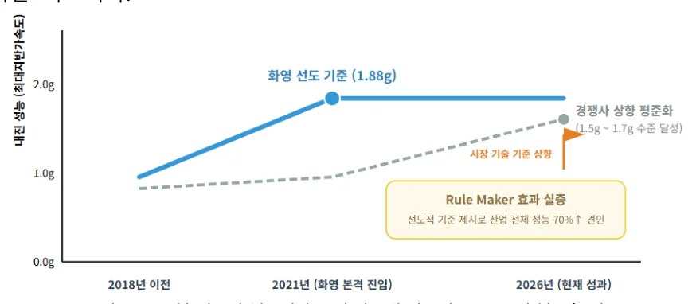
제 5 장 결론 및 시사점
5.1. 연구 결과의 요약: 후발주자의 한계를 넘어 산업 표준을 설계하는 상향식
아키텍처 설계자 (주)화영 본 연구는 국내 건축자재 산업의 후발 중소기업인 (주)화영이 자본과 브랜드의 열세를 극복하고 어떻게 선발 대기업과 공생하며 독점적 시장 지위를 형성했는지 규명하기 위해 수행되었다. Architectural Innovation, Dynamic Capabilities, TIS라는 세 가지 이론적 렌즈를 통합 적용하여 화영의 혁신 전략을 분석한 결과, 화영의 성공은 단순한 제품 공급과 납품 구조에 머물러 있던 기존 생태계를 가치 설계 중심으로 전환시킨 시장 설계자(Rule Maker)로의 진화 과정임을 확인하였다. 분석 결과, 화영의 성공은 형상 혁신(기술), 규제 변화의 전략적 활용(전략), TIS 기반 생태계 설계(생태계) 전략이 개별적 성과에 그치지 않고 유기적으로 결합하여 강력한 시너지를 창출한 결과였다. 2016-17년 경주 · 포항 지진 이후 강화된 비구조요소 내진 설계 의무화라는 Government-induced Demand Pull Shock에 직면하여, 화영은 기존 C형 단면을 S형으로 재설계함과 동시에 부실한 기존 더블엠바 클립 구조를 3면 체결 방식의 내진 클립으로 전환하는 아키텍처 혁신을 단행하였다. 이를 통해 안전성과 경제성을 동시에 달성하는 통합 솔루션을 제시함으로써 후발 기업의 자원 장벽을 기술 패권으로 치환하였다. 특히 S-Channel 형상과 클립 이중 체결 구조의 결합은 동일한 자재를 사용하면서도 경쟁사 대비 최대 88% 향상된 내진 성능(1.88g)을 실현하였으며, 여기에 제조-시공 일체형 공급 구조를 더해 국토부 2026년 상반기 표준 품셈 대비 46%의 원가 절감을 달성하였다. 이러한 압도적 성능과 경제적 효율성은 비숙련공도 고성능 내진 시공을 가능하게 하는 탈숙련화를 실현했으며, 결과적으로 조달 진입 2년 만에 조달 매출 115억 원, 석고텍스 기반 내진 우수제품 세부 품목 점유율 70% 이상을 달성하며 화영이 시장의 기술적 공백(Gap)을 성공적으로 메우고 국내 천장재건축자재 산업의 표준을 주도하였다.
<표11> (주) 화영의 산업적 도전과 전략적 해법 — Challenge / Solution
출처 : 본인 작성
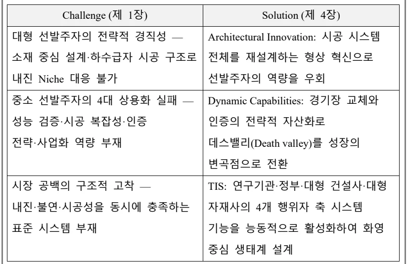
이상의 분석 결과는 본 연구의 두 가지 연구 질문에 대한 직접적 답변을 제공한다. RQ1(후발주자인 (주)화영은 어떻게 국내 건축자재 산업에서 선도적 위치를 형성할 수 있었는가?)에 대해서는 위의 네 가지 메커니즘 — 형상 혁신의 복리 구조, 시공의 R&D화, 규제 변화의 전략적 활용, 생태계 행위자 네트워크의 선제적 설계 — 이 그 답이다. RQ2(화영의 성장 메커니즘이 산업 후발 기업들에게 주는 시사점은 무엇인가?)에 대해서는 5.2.2에서 상세히 제시한다.
5.2. 연구의 시사점
5.2.1. 이론적 시사점: 후발 중소기업의 TIS 능동적 활성화 주체 전환 메커니즘
정립 본 연구는 (주)화영의 사례를 통해 기존 기술경영 이론의 경계를 확장하며 다음과 같은 학술적 시사점을 제공한다. 첫째, Architectural innovation 이론의 주체적 확장이다. Henderson & Clark(1990)이 주목한 아키텍처 혁신의 파괴적 속성을 넘어, 자원이 제한된 후발 기업이 연결 구조의 재설계만으로 선발주자의 규모의 경제를 무력화하는 시장 역전 도구로서의 가능성을 입증하였다. 둘째, Government-induced Demand Pull Shock하에서의 Dynamic capabilities 발현 메커니즘의 규명이다. 지진이라는 외생 충격이 정부 규제를 통해 구조적 수요로 전환되는 상황에서, 화영이 경쟁사보다 빠르게 대응할 수 있었던 조직적 근원은 제조-시공 일체형 구조였다. 이 구조가 현장 페인포인트(Pain Point)를 제품 설계로 즉각 환류시키는 피드백 루프를 형성함으로써, 제도적 신호와 창업자 사전 지식이라는 이중 Sensing 경로를 가능하게 하였다. 이는 Teece(2007)의 원형 이론이 충분한 자원을 보유한 기업을 전제하는 경향에 대한 중소기업 맥락의 이론적 확장이며, 동시에 조직 설계 자체가 Dynamic Capabilities의 원천이 될 수 있음을 실증한다. 셋째, 후발 중소기업의 TIS 능동적 활성화 주체 전환 메커니즘의 정립이다. 기존 TIS 연구가 대기업 또는 정부를 시스템 기능의 주도적 활성화 주체로 전제한 반면, 본 연구는 자원이 제한된 후발 중소기업이 공인 검증을 통한 정당성 확보, 규제 변화의 선제적 활용을 통한 시장 형성 기능 활성화, 대형 건설사와의 상향식 협업을 통한 지식 확산, 대형 자재사 네트워크를 통한 긍정적 외부효과 창출이라는 네 가지 조건을 유기적으로 연동함으로써 TIS 생태계의 설계자로 전환할 수 있음을 실증하였다. 이는 TIS 이론이 기존에 설명하지 못했던 후발 중소기업 주도의 시스템 기능 활성화 메커니즘을 새롭게 규명한 이론적 기여다.
5.2.2. 실무적 시사점: 후발 기업을 위한 4대 전략 Action Plan
화영의 사례는 건축자재 산업을 포함한 기술집약적 제조 분야의 후발 기업들에게 다음과 같은 보편적 실무 지침을 제공한다. 후발주자는 제품을 잘 만드는 것이 아니라, 자신의 기술이 곧 제도가 되게끔 생태계를 설계해야 한다. 화영의 사례가 보여주는 가장 근본적인 통찰이 이것이다. 첫째, 발상의 전환이다. 치열한 가격 경쟁 레드오션에서 벗어나 연구 개발에 집중하여 비가격경쟁 시장을 개척해야 한다. 자본과 인프라가 제한된 후발 기업에게 고위험의 소재 개발보다 효과적인 것은 기존 자원을 유지하며 연결 논리를 바꾸는 아키텍처 혁신이다. 형상 변화를 특허로 보호하고 이를 조달 독점과 산업 표준으로 연결하는 수익의 복리 구조를 설계함으로써 자원 제약을 우회하는 경쟁력을 구축해야 한다. 화영이 범용재 시장에서 벗어나 내진 천장재라는 비가격경쟁 시장을 개척하여 산업 표준이 된 것이 이 전략의 실증이다. 둘째, 시공의 R&D화를 통한 암묵지 장벽이다. 대기업이 구조적으로 접근하기 힘든 현장을 R&D의 거점으로 삼아야 한다. 현장에서 포착한 페인포인트가 제품 설계로 환류되는 구조를 갖춘 기업은, 대기업이 아무리 자본을 투입해도 단기간에 축적할 수 없는 암묵지(Tacit Knowledge) 장벽을 보유하게 된다. 이 장벽은 복제 불가능하다는 점에서 가장 강력한 진입장벽이다. 셋째, 규제 변화를 기회의 창(Window of Opportunity)으로 전환하는 역량이다. 끊임없이 비즈니스 환경 변화에 관심을 갖고 감지하며 사전에 대비하는 노력이 필요하다. 대부분의 기업이 규제를 사후 대응의 비용으로 인식하는 반면, 후발 중소기업에게 규제 전환 국면은 선발주자와의 자원 격차가 일시적으로 무력화되는 기회의 창이다. 규제가 요구하는 성능 기준을 충족한 제품을 경쟁사보다 먼저 개발하고 인증을 확보함으로써 시장 진입장벽을 역으로 활용해야 한다. 규제를 기다리는 기업은 대응하고, 규제를 예측하는 기업은 표준을 만든다. 넷째, TIS 생태계 행위자 네트워크의 선제적 설계이다. 대기업에 종속되는 단순 하청 관계를 탈피하고 연구기관 · 정부 · 대형 건설사 · 대형 자재사라는 4개 행위자 축의 시스템 기능을 선제적으로 활성화하는 생태계 설계자로 포지셔닝해야 한다. 화영은 R&D 역량으로 대기업 로드맵의 빈 퍼즐을 채워 새로운 생태계를 구축하였다. 대기업의 유통망과 브랜드 파워를 자사 기술 확산의 엔진으로 활용하는 이 구조는, 자원이 제한된 후발 중소기업이 생태계 수혜자가 아닌 설계자로 전환하는 유일한 경로다. 기회를 기다리는 기업은 납품업체가 되고 기회를 설계하는 기업은 표준 설계자가 된다. 나아가 화영의 사례는 정책 입안자에게도 시사점을 제공한다. 조달청 우수제품 제도가 단순한 구매 채널을 넘어, 혁신 역량을 갖춘 후발 중소기업이 시장 포지션을 역전하는 제도적 가속기(Institutional Accelerator)로 기능함을 실증하였다. 혁신 지향 공공조달 제도의 설계와 확대가 후발 중소기업의 기술 사업화를 촉진하는 효과적인 정책 수단임을 시사한다.
5.3. 화영의 지속 성장을 위한 미래 전략: 대기업과의 전략적 공생
향후 본격화될 대형 건자재 기업들과의 관계에서 화영은 직접적인 시장 점유율 경쟁보다 기술적 대체 불가능성을 담보로 한 전략적 공생(Co-opetition) 모델을 강화해야 한다. 첫째, 보완적 플랫폼 리더십의 확립이다. 대기업의 범용 판넬이 화영의 고성능 아키텍처 위에서만 내진 성능을 완결할 수 있는 Intel Inside 방식의 보완적 종속 관계를 공고히 해야 한다. 이는 대기업을 경쟁자가 아닌 화영 시스템의 소재 공급처이자 유통 파트너로 전치시키는 핵심 전략이다. 둘째, 공인 표준의 독점적 권위 확보이다. 추진 중인 NEP · NET 인증 취득을 통해 사실상의 표준을 법적 · 공식적 표준(De jure Standard)으로 격상시키고 KCL과의 협력을 플랫폼화하여 타사 제품의 성능까지 화영의 기준에 따라 검증받게 만드는 기술 신뢰의 허브 지위를 선점해야 한다. 셋째, 대기업 직접 진입 시나리오에 대한 선제적 대응이다. KCC · LX하우시스 · 우미건설 등 현재 협력사가 동일 내진 시장에 직접 진입할 경우, 화영의 대응 핵심은 이미 편입된 TIS 생태계 행위자 네트워크 구조의 공고화다. 대기업이 화영의 아키텍처를 복제하려면 특허 회피 · 시공팀 구축 · 현장 암묵지 축적에 수년이 소요된다. 이 시간을 기술 표준의 공고화와 해외 시장 진출로 채워 선점 효과를 극대화하는 것이 화영의 시간 전략이어야 한다. 넷째, 글로벌 Dominant Design으로의 진화이다. 국내 조달 시장에서의 성공을 발판 삼아 일본, 대만, 인도네시아 등 지진 빈발 국가로 조기에 진입하여 글로벌 트랙 레코드를 확보함으로써 대규모 자본이 유입되기 전 세계 시장에서의 아키텍처 주도권을 선점해야 한다.
5.4. 연구의 한계 및 향후 과제
본 연구는 단일 사례 연구로서 산업 전반에 대한 일반화에는 신중한 접근이 필요하다. 특히 현재 추진중인 NEP · NET 인증 취득 결과 및 KCL과의 공동 특허 절차가 최종 완료된 이후, 화영의 아키텍처가 단순한 기술 표준을 넘어 법적 강제성을 띤 국가 표준으로까지 격상되는 과정에 대한 사후 성과 분석이 이루어지지 않았다는 점이 연구의 한계로 남는다. 향후 연구에서는 이러한 제도적 인증의 완결이 실제 매출 성장과 시장 지배력 강화에 미치는 영향을 정량적으로 분석하고 일본 및 동남아시아 시장 수출 시 각국의 내진 규제 체계와 화영의 솔루션이 어떻게 결합되는지에 대한 현지화 적용 연구가 뒷받침되어야 할 것이다. 이를 통해 중소기업 주도의 기술 혁신이 국가 경제의 지속 가능한 성장 동력으로 자리매김하는 과정을 더욱 면밀히 규명할 수 있을 것이다.
Appendix A
박봉제 대표이사 심층 인터뷰 전문 인터뷰 일시: 2026년 1월 5일 (월), 13:00~18:00 (총 5시간) 인터뷰 장소: (주)화영 본사, 서울특별시 송파구 법원로 128 인터뷰어: 박주연 (KAIST 기술경영대학원 석사과정) 인터뷰이: 박봉제 대표이사, ㈜화영 (동업계 경력 39년) 인터뷰 형식: 반구조화 심층 인터뷰 (Semi-structured In-depth Interview) 녹취 및 전사: 인터뷰이 동의 하에 녹취 후 전사 인터뷰 배경 및 목적 본 인터뷰는 KAIST 기술경영대학원 석사학위 논문 「건축자재 후발 중소기업 ㈜화영의 형상 혁신과 공공 조달 생태계 주도를 통한 Rule Maker 전환 전략 연구」의 1차 자료 수집을 목적으로 수행되었다. Yin(2018)의 삼각검증 (Triangulation) 원칙에 따라, 본 인터뷰는 나라장터 조달 데이터 · 특허청 KIPRIS · 정부 고시 등 2차 자료와의 교차 검증을 위한 핵심 1차 자료로 활용된다. 1부: 창업 배경 및 사전 지식 기반 전략 (Sensing) Q1.
대표님께서는 1987년부터 2011년까지 약 25년간 PVC 창호 관련 대기업에서 근무하신 후 화영을 창업하셨습니다. 창업의 결정적 계기와 당시의 목표는 무엇이었습니까? A. 25년이라는 시간 동안 대기업에서 영업 업무를 담당하면서 시장이 어떻게 돌아가는지 몸으로 배웠습니다. 거래처 네트워크, 수요 패턴, 현장에서의 페인포인트까지 전부 직접 경험했죠. 그런데 어느 시점부터 '독자적인 기술과 제품을 갖춘 회사를 만들겠다'는 생각이 강해졌습니다. 대기업에서는 아무리 좋은 아이디어가 있어도 조직의 의사결정 구조상 실행이 느리고, 내가 발견한 현장의 문제를 내 방식으로 해결하고 싶었습니다. 창업 당시 목표는 단순히 돈을 버는 것이 아니라 현장이 진짜 필요로 하는 기술을 만드는 회사였습니다. Q2. 창업 초기 PVC 창호 보강재 유통업으로 시작하여 경량철골 제조, 내진 시스템으로 순차 확장하셨습니다.
이 확장 경로는 처음부터 설계된 것이었습니까, 아니면 단계적으로 발견된 것입니까? A. 처음부터 내진 천장재까지 그림을 그렸던 건 아닙니다. 그러나 방향은 처음부터 명확했습니다. '지금 하는 사업과 연관된 것, 내가 이미 아는 것, 기존 설비로 할 수 있는 것'을 기준으로 한 걸음씩 이동했습니다. PVC 창호 보강재를 유통하다 보니 직접 만들면 더 좋겠다 싶었고, 보강재를 만들다 보니 같은 기계로 경량철골도 할 수 있겠다 싶었습니다. 경량철골을 하다 보니 내진 시장이 열리는 게 보였습니다.
각 단계가 다음
단계의 발판이 되는 구조였습니다. 새로운 분야에 뛰어들 때마다 기존 설비와 거래처를 최대한 활용했기 때문에 추가 투자가 최소화되었고 그게 생존의 핵심이었습니다. 2부: 형상 혁신의 본질과 전략적 선택 (Architectural Innovation) Q3. 화영의 핵심 기술인 S-Channel과 내진 클립 시스템은 신소재가 아닌 형상의 재설계를 통해 개발되었습니다. 이를 '형상 혁신(Form Innovation)'이라고 표현하시는데, 이 선택의 전략적 배경이 무엇입니까? A.
중소기업이 신소재를 개발하는 건 현실적으로 불가능합니다.
비용도 비용이지만, 실패했을 때 회복이 안 됩니다. 저는 처음부터 '소재는 업계 표준을 쓰되, 소재와 소재를 연결하는 방식을 바꾸자'는 방향을 잡았습니다. 아연도금강판은 모든 업체가 쓰는 범용 소재입니다. 그런데 그걸 어떤 형상으로 가공하고 어떻게 연결하느냐에 따라 성능이 완전히 달라집니다. 저는 이것을 '자원 거부성(Resource Refusal)'이라고 생각했습니다. 신소재라는 고비용·고위험 경로를 전략적으로 거부하고, 연결 구조의 재설계에 모든 역량을 집중하는 것입니다. Q4. C형 채널을 S형으로 변경하고, 더블엠바클립을 3면 체결 구조의 내진 클립으로 재설계한 아이디어는 어디서 출발했습니까? A. 현장에서 나왔습니다. 저희는 제조와 시공을 동시에 합니다. 경쟁사들은 제품을 만들어서 하수급자한테 시공을 넘기는데 저희는 직접 현장에 들어갑니다.
그러니 현장에서 어디가 문제인지 바로 보입니다.
기존 더블엠바클립은 채널에 그냥 걸쳐놓는 구조입니다. 손으로 눌러서 끼우면 끝이에요. 시공은 편한데 지진이 오면 그게 그대로 빠집니다. 클립과 채널의 접촉면이 너무 작아서입니다.
그걸 보면서 '접촉 면적을 늘리고 이탈을 구조적으로 막으려면 어떻게 해야 하나'를 계속 고민했습니다. S자 단면으로 바꾸면 클립이 채널을 세 면에서 감싸게 됩니다. 그렇게 되면 진동이 와도 이탈이 원천 차단됩니다. 단순한 아이디어지만 그게 기존 방식과 완전히 다른 아키텍처입니다. Q5.
조달 시장에서 마감재로 석고텍스를 선택하신 것도 전략적 결정이었습니까? 경쟁사들은 금속판 마감재를 선택했는데요. A. 맞습니다. 저는 '기술력은 보이지 않는 본질에, 자재는 보이는 범용성에 집중한다'는 원칙을 갖고 있습니다.
경쟁사들은 고마진을 남기려고 특수 금속판을 씁니다. 그런데 그러면 수요처가 불안해집니다. 천장재는 나중에 보수도 해야 하는데, 특수 자재를 쓰면 보수할 때 그 자재를 다시 구해야 하는 문제가 생깁니다.
석고텍스는 어디서나 구할 수 있는 가장 대중적인 마감재입니다. 수요처 입장에서는 유지보수가 편하고 저는 마감재 마진 대신 내진 틀의 기술 경쟁력으로 승부하는 거죠. 그게 결과적으로 석고텍스 내진 시장에서 단독 공급자 지위로 이어졌습니다. 3부: 규제 전환의 전략적 활용 (Dynamic Capabilities - Sensing & Seizing) Q6. 2016년 경주 지진 이후 내진 시장의 가능성을 포착하셨습니다. 국토부의 내진설계 의무화 고시(2019)가 나오기 전에 이미 특허 출원을 준비하셨는데, 어떻게 그 시점에 움직이실 수 있었습니까? A. 2016년 경주 지진이 터졌을 때, 저는 '이제 시장이 바뀐다'는 확신이 생겼습니다. 지진 피해를 보니 천장재가 얼마나 취약한지 모두가 알게 된 거잖아요. 정부가 가만있을 리 없다는 게 보였습니다. 25년 현장 경험이 있으니 정부가 어떤 방향으로 움직일지 읽혔습니다. 내진 성능 기준을 법으로 만들 것이고 그러면 성능을 검증받은 제품만 시장에 남는다는 구조가 보였습니다. 그래서 규제가 나오기 전에 특허부터 출원했습니다. 규제가 나왔을 때 이미 기술적으로 준비가 된 상태여야 경쟁사보다 앞설 수 있습니다. 규제를 위협으로 보는 기업은 대응에 급급하지만, 기회로 보는 기업은 먼저 준비합니다. Q7. 2014~2016년 데스밸리 구간을 어떻게 버티셨습니까? 당시 자금 압박과 인력난이 심각했던 것으로 압니다. A. 그 시기가 가장 힘들었습니다. 제조업으로 전환하면서 초기 설비 투자가 상당했고 매출은 바로 안 붙으니까 현금이 빠듯했습니다. 그런데 저는 그 구간에 기술 투자를 줄이지 않았습니다. 오히려 그때 내진 쪽으로 방향을 확정했습니다. 판단 근거는 단순했습니다. 범용재 시장은 앞으로도 가격 경쟁만 심해질 것이고 중소기업이 그 싸움에서 이길 방법이 없다는 거였습니다. 그러면 남들이 못 들어오는 곳을 만들어야 하는데, 기술과 인증이 그 역할을 한다고 봤습니다. 데스밸리를 버틴 건 기존 유통 거래처에서 나오는 현금흐름이 있었기 때문입니다. 그 안정적인 수입을 기반으로 기술 투자를 지속한 겁니다. 4부: 조달 시장 진입 및 생태계 구축 전략 (TIS) Q8. KCL과의 진동대 시험에서 1.88g라는 업계 최고 수치가 나왔습니다. 이 수치의 의미와, 이것이 시장에서 어떤 역할을 했습니까? A. 1.88g는 우리가 목표로 설정한 수치입니다. 공인 기관 시험에서 나온 숫자이기 때문에 아무도 반박할 수 없습니다. 경쟁사들이 1.0g, 1.2g인데 화영이 1.88g이면, 발주처 입장에서 선택이 명확해집니다. 단순히 성능이 높다는 게 아니라, 객관적인 기준으로 검증됐다는 게 핵심입니다. 그리고 우리가 이 수치를 확립하고 나서 경쟁사들이 1.5g 이상으로 올리기 시작했습니다. 우리가 기준을 세운 거죠. 내진 등급 기준이 없던 시장에서 사실상의 성능 기준점을 우리가 먼저 만든 겁니다. Q9. KCC와의 협업에서 화영이 먼저 S-Channel 전용 아키텍처를 제안하셨다고 합니다. 대기업에 기술 아이디어를 먼저 제안하는 것이 쉽지 않은 결정이었을 텐데요. A. 당시 KCC는 대규격 석고텍스 판넬을 출시하며 시장 변화를 꾀하고 있었으나, 그에 걸맞은 정교한 내진 천장틀 구조에 대해서는 고민이 깊은 시점이었습니다. 우리는 단순히 우리 제품을 써달라고 영업한 것이 아니라, KCC 판넬의 안전성과 미적 가치를 극대화할 수 있는 'S-Channel 전용 아키텍처'를 그려서 먼저 제안했습니다. 대기업이 중소기업을 시혜적으로 선택한 것이 아니라, 중소기업이 대기업의 로드맵에서 부족한 퍼즐을 채워주며 생태계의 설계자로 나선 것입니다. KCC 카탈로그에 등재된다는 건 우리 아키텍처가 국내 최대 건자재 기업의 제품 체계 안으로 들어간다는 의미입니다. 그게 경영에서 말하는 Dominant Design 확산의 핵심 경로입니다. Q10. 우미건설과의 공동특허(건식벽체 시공방법) 체결도 화영이 먼저 제안한 것으로 알고 있습니다. 이 협업 구조는 어떻게 설계하셨습니까? A. 우미건설 현장에서 시공하면서 현장의 니즈를 파악했습니다. 기존 습식 벽체 공법은 공기도 길고 비용도 많이 듭니다. 우리가 가진 경량철골 형상 혁신 기술을 벽체에 적용하면 공기도 줄이고 원가도 낮출 수 있겠다고 봤습니다. 그래서 우미건설에 먼저 아이디어를 가져갔고 같이 개발하자고 제안했습니다. 결과적으로 공동특허가 나왔고 우미린 아파트 표준 공법으로 편입됐습니다. 중요한 건 이게 단순한 납품이 아니라 화영의 공법이 대형 건설사의 표준 시공 방식이 됐다는 겁니다. 이후 다른 건설사들이 우미건설 사례를 보고 연락을 해옵니다. 신뢰가 신뢰를 낳는 구조입니다. 5부: 시장 규모 및 경쟁 구조 Q11. 국내 경량철골 천장재 시장 규모와 그 중 내진 천장재 공공 조달 시장의 규모를 어떻게 추정하고 계십니까? A. 정부에서 공식적으로 집계한 통계는 없습니다. 업계에서의 정보, 40년 현장 경험과 내부적으로 분석한 수치입니다. 경량철골 천장재 전체 시장은 2025년 기준으로 8,500억~9,000억 원 정도로 봅니다. 공공 교육시설 환경 개선 사업이 확대되면서 전년 대비 6~7% 성장한 수준입니다. 그 중에서 조달청 나라장터를 통해 발주되는 내진 천장재 공공 조달 시장은 약 2,200억~2,500억 원으로 추정합니다. 이 수치는 나라장터 조달 실적 데이터와 시장 내 업체들의 매출 구조를 분석한 결과입니다. 2027년 석면 교체 기한이 가까워질수록 이 시장은 더 커질 것입니다. Q12. 대형 선발주자들이 내진 니치 시장에 적극적으로 대응하지 못한 이유를 어떻게 보십니까? A.
유창, 대한강재 같은 대형 선발주자들은 저희 대비 매출 규모가 5~10배입니다. 그런데 그게 오히려 약점이 됩니다. 그들은 대량 생산 체제에 최적화되어 있어서 내진 특화 제품 하나를 위해 금형과 생산 라인을 바꾸는 게 내부에서 우선순위를 못 받습니다. 또 시공을 하수급자에게 넘기는 구조이기 때문에 현장 맞춤형 대응이 어렵습니다. 내진 천장재는 건물마다 규격이 다 다르고 현장 상황에 맞게 시공해야 합니다. 저희는 직접 시공하니까 거기에 유연하게 대응할 수 있는 거죠. 대기업의 강점이 내진 니치 시장에서는 오히려 장애가 됩니다. Henderson & Clark이 말한 '보이지 않는 위협'이 바로 이겁니다. 6부: 조직 철학 및 미래 전략 Q13. 화영은 직원 복지에 상당한 투자를 하고 있는 것으로 알고 있습니다. 이것이 단순한 복지가 아닌 기술 경쟁력과 연결된다고 보시는지요? A. 기업 성장의 원천은 결국 사람과 혁신입니다. 내진 천장재는 시공 품질이 균일해야 합니다. 하수급자 구조에서는 아무리 좋은 제품을 만들어도 시공자의 숙련도에 따라
성능이 달라집니다.
저희는 숙련 인력을 직접 채용하고 육성합니다. 그러려면 그 사람들이 회사에 오래 있어야 하고 그러려면 복지가 좋아야 합니다. 2025년에 사내 복지기금 5,000만 원을 조성한 것도 그 이유입니다. 직원이 안정적으로 일할 수 있어야 숙련도가 쌓이고 숙련도가 쌓여야 시공 품질이 올라가고 시공 품질이 올라가야 고객의 신뢰가 생깁니다. 복지가 곧 기술 경쟁력인 구조입니다. 무엇보다도 직원을 가족처럼 대하는 것이 가장 중요하다고 생각합니다.
함께해준 직원이 없었으면 지금의 화영도 없습니다. Q14. 향후 화영의 전략 방향, 특히 해외 시장 진출과 NEP·NET 인증 추진 계획을 말씀해 주시겠습니까? A. 중소기업 입장에서 연구 인력과 개발비를 투입하는 것은 쉽지 않은 결정이었습니다.
그러나 친환경·내진·불연·흡음
성능을 동시에 갖춘 천장 시스템을 만드는 것이 목표였습니다. NEP와 NET는 추진 중입니다. 이것이 완성되면 사실상의 표준이 법적·공식적 표준으로 격상됩니다. KCL과의 공동 특허도 마찬가지입니다. 국내에서 기술과 인증 체계를 공고히 하면서 동시에 일본·대만·인도네시아 같은 지진 다발 국가 수출을 준비하고 있습니다. 국내에서 쌓은 공인 시험 성적서와 조달청 우수제품 지정은 해외에서도 기술 신뢰성을 입증하는 핵심 근거가 됩니다. 국내 조달 시장에서의 성공이 글로벌 Dominant Design으로 가는 발판이 되는 구조입니다. 인터뷰 종료 인터뷰어 코멘트: 본 인터뷰는 총 5시간에 걸쳐 진행되었으며 인터뷰이의 동의 하에 전 과정을 녹취하였다. 전사 내용은 인터뷰이의 검토 및 확인을 거쳤다. 인터뷰에서 제시된 시장 규모 추정치, 재무 데이터, 경쟁사 비교 수치 등은 나라장터 조달정보개방포털 · 특허청 KIPRIS · 화영 내부 결산 자료 등 2차 자료와의 삼각검증을 통해 교차 확인하였다. 인터뷰 활용 범위: 본 인터뷰 내용은 KAIST 기술경영대학원 석사학위 논문 작성에 한하여 사용되며 인터뷰이의 서면 동의 없이 상업적 목적으로 활용될 수 없다. 인터뷰이 확인 및 동의 본인은 위 인터뷰 전사 내용을 검토하였으며 내용이 실제 인터뷰 발언과 일치함을 확인합니다. 또한 본 내용이 KAIST 기술경영대학원 석사학위 논문 「건축자재 후발 중소기업 ㈜화영의 형상 혁신과 공공 조달 생태계 주도를 통한 Rule Maker 전환 전략 연구」의 1차 자료로 활용되는 것에 동의합니다. 확인 일자: 2026년 5월 16일 인터뷰이 성명: 박봉제 (서명) ___________________ 소속 및 직위: ㈜화영 대표이사 인터뷰어 성명: 박주연 (서명) ___________________ 소속: KAIST 기술경영대학원 석사과정
Appendix B
Appendix C
2012 23.8 — — — — 18.1% — 2 2013 40.4 — — — — — — — 2014 39.3 — — — — — — — 2015 53.1 — — — — — — — 2016 83.0 — — — — — — — 2017 91.7 — — — — — — — 2018 106.3 — — — — — — — 2019 98.8 — — — — — — — 2020 94.6 — — — — — — — 2021 141.1 — — — — — — — 2022 157.7 — — — — — — — 2023 185.7 — — — — — — — 2024 186.7 — — — — — — — 2025 202.0 — — — — — 5.80% 45 *일부 항목은 기업 기밀 보호를 위해 생략되었음
각주
- 경량철골 천장재 세부 품목에 대한 별도의 공식 시장 통계가 존재하지 않는 점을 감안하여, 본 수치는 동업력 39년의 업계 전문가인 화영 대표이사 인터뷰(박봉제, 2026)에 기반한 추정치임을 밝힌다. 인터뷰 전문은 Appendix A를 참조. 14 ↩
Reference
- Audretsch, D. B. (1995). Innovation and industry evolution. MIT Press.
- Chesbrough, H. W. (2003). Open innovation: The new imperative for creating and profiting from technology. Harvard Business School Press.
- Christensen, C. M. (1997). The innovator's dilemma: When new technologies cause great firms to fail. Harvard Business School Press.
- Helfat, C. E., & Peteraf, M. A. (2003). The dynamic resource-based view: Capability lifecycles. Strategic Management Journal, 24(10), 997–1010.
- Nonaka, I., & Takeuchi, H. (1995). The knowledge-creating company: How Japanese companies create the dynamics of innovation. Oxford University Press.
- Porter, M. E. (1980). Competitive strategy: Techniques for analyzing industries and competitors. Free Press.
- Yin, R. K. (2018). Case study research and applications: Design and methods (6th ed.). SAGE Publications. 정기간행물 논문 (Journal Articles)
- 김영진 (2008). 부품업체에 의한 시스템 제품의 아키텍처 혁신: 카메라폰 플랫폼 변경 사례. 전략경영연구, 11(3), 91-117.
- Auerswald, P. E., & Branscomb, L. M. (2003). Valleys of death and Darwinian seas: Financing the invention to innovation transition in the United States. Journal of Technology Transfer, 28(3– 4), 227–239.
- Blind, K. (2012). The influence of regulations on innovation: A quantitative assessment for OECD countries. Research Policy, 41(2), 391–400.
- Carlsson, B., & Stankiewicz, R. (1991). On the nature, function and composition of technological systems. Journal of Evolutionary Economics, 1(2), 93–118.
- Dierickx, I., & Cool, K. (1989). Asset stock accumulation and sustainability of competitive advantage. Management Science, 35(12), 1504–1511.
- Edquist, C., & Hommen, L. (1999). Systems of innovation: Theory and policy for the demand side. Technology in Society, 21(1), 63–79.
- Eisenhardt, K. M., & Martin, J. A. (2000). Dynamic capabilities: What are they? Strategic Management Journal, 21(10–11), 1105–1121.
- Etzkowitz, H., & Leydesdorff, L. (1995). The Triple Helix: University-industry-government relations. EASST Review, 14(1), 14–19.
- Etzkowitz, H., & Leydesdorff, L. (2000). The dynamics of innovation: From national systems and "Mode 2" to a Triple Helix of university-industry-government relations. Research Policy, 29(2), 109–123.
- Helfat, C. E., & Peteraf, M. A. (2003). The dynamic resource-based view: Capability 93 lifecycles. Strategic Management Journal, 24(10), 997–1010.
- Hekkert, M. P., Suurs, R. A. A., Negro, S. O., Kuhlmann, S., & Smits, R. E. H. M. (2007). Functions of innovation systems: A new approach for analysing technological change. Technological Forecasting and Social Change, 74(4), 413–432.
- Henderson, R. M., & Clark, K. B. (1990). Architectural innovation: The reconfiguration of existing product technologies and the failure of established firms. Administrative Science Quarterly, 35(1), 9–30.
- Immelt, J. R., Govindarajan, V., & Trimble, C. (2009). How GE is disrupting itself: How reverse innovation is changing global business. Harvard Business Review, 87(10), 56-65.
- Lieberman, M. B., & Montgomery, D. B. (1988). First-mover advantages. Strategic Management Journal, 9(S1), 41–58.
- Lippman, S. A., & Rumelt, R. P. (1982). Uncertain imitability: An analysis of interfirm differences in efficiency under competition. Bell Journal of Economics, 13(2), 418–438.
- Shane, S. (2000). Prior knowledge and the discovery of entrepreneurial opportunities. Organization Science, 11(4), 448–469.
- Shankar, V., Carpenter, G. S., & Krishnamurthi, L. (1998). Late mover advantage: How innovative late entrants outsell pioneers. Journal of Marketing Research, 35(1), 54–70.
- Teece, D. J. (1986). Profiting from technological innovation: Implications for integration, collaboration, licensing and public policy. Research Policy, 15(6), 285–305.
- Teece, D. J. (2007). Explicating dynamic capabilities: The nature and microfoundations of (sustainable) enterprise performance. Strategic Management Journal, 28(13), 1319–1350.
- Teece, D. J., Pisano, G., & Shuen, A. (1997). Dynamic capabilities and strategic management. Strategic Management Journal, 18(7), 509–533.
- Utterback, J. M., & Suárez, F. F. (1993). Innovation, competition, and industry structure. Research Policy, 22(1), 1–21.
- Zollo, M., & Winter, S. G. (2002). Deliberate learning and the evolution of dynamic capabilities. Organization Science, 13(3), 339–351.
- Zucker, L. G. (1986). Production of trust: Institutional sources of economic structure, 1840– 1920. Research in Organizational Behavior, 8, 53–111. 특허
- 특허청. (2025). 건식벽체용 스터드를 이용한 건식벽체 시공방법 [등록번호 제10- 2820120호]. 특허청 KIPRIS. 보고서 (Reports / Government & Corporate Materials)
- (주)화영. (2023a). 내진형 불연·흡음 천장 시스템 [제품 카탈로그]. (주)화영.
- (주)화영. (2023b). 46% 예산절감을 위한 조달청 우수 천장재 [제품 카탈로그]. 94 (주)화영.
- (주)화영. (2025). 내부 기술 및 경영자료. 미출판 자료.
- (주)화영. (2026). 내부 연도별 결산 자료 (2012~2025). 미출판 자료.
- 건축물의 피난·방화구조 등의 기준에 관한 규칙 [행정규칙]. (개정 2022. 2. 10.). 국토교통부령 제1072호, 제24조.
- 건축법 시행령 [대통령령]. (타법개정 2026. 1. 16.). 대통령령 제34168호, 제61조.
- 교육부 (2025). 2025년 학교시설 내진보강 및 환경개선 추진계획 (pp.12-15)
- 교육부. (2025). 전국 초·중·고 학교 건축물 현황 [국회 제출 자료]
- 국토교통부 고시 제2019-711호(2019.03)
- 교육부. (2020). 학교시설 내진설계 기준 [교육부고시 제2020-223호, 시행 2020. 4. 1.]. 교육부.
- KCL(한국건설생활환경시험연구원). (2022). 진동대 시험 성적서 (ICC-ES AC156 기준). KCL.
- 부산대학교 지진방재연구센터. (2019). 내진형 천장 판넬 시스템 성능 시험 성적서. 부산대학교.
- 한국공기청정협회. (2021). HB마크 인증서 — 최우수등급 (클로버 5개): 화영 내진형 불연 천장 판넬 시스템. 한국공기청정협회.
- 한국환경산업기술원(KEITI). (2024). 환경성적표지 인증서 — 저탄소제품: 화영 내진형 불연 천장 판넬 시스템. KEITI.
- 행정안전부. (2017). 9.12 지진 백서. 행정안전부. 행정안전부. (2018). 2017 포항지진 백서. 행정안전부.
- 환경부. (2025). 2025년 환경일자리 으뜸기업 선정 결과. 환경부. 95 웹페이지 및 언론보도 등
- (주)화영. (n.d.). “(주)화영 공식 홈페이지”. http://hwa-young.kr/
- KCC. (2022). 대규격 석고텍스 PLUS 내진 천장 시스템 제품 가이드. KCC. https://www.kccworld.co.kr/materials/interior-exterior/ceiling.do
- 김가람. (2020, 7월 28일). 주식회사 화영 내진천정틀 'S찬넬 시스템' 개발. 한국금융경제신문. https://www.kfenews.co.kr/news/articleView.html?idxno=572460
- 박서경. (2024, 10월 7일). [단독] 교실 천장이 부른 비극…"잠복기 최대 40년" 우려 [TV 뉴스 리포트]. SBS 8뉴스. https://news.sbs.co.kr/news/endPage.do?news_id=N1007825705
- 박준호, 김태윤. (2025, 11월 10일). [기획] 국내 건축 화재안전기술 어디까지 왔나… '2025 한국건축산업대전'. FPN소방방재신문. https://fpn119.co.kr/242398
- 소성렬. (2025, 9월 26일). 화영, '2025 중소환경기업 일자리 창출 으뜸기업' 환경부장관상 수상. 전자신문. https://www.etnews.com/20250926000169
- 소성렬. (2026, 4월 6일). 박봉제 화영 대표, "지진에도 무너지지 않는 천장을 만들겠다". 전자신문. https://www.etnews.com/20260406000166
- 이종구. (2025, 11월 7일). "고용 늘려 친환경 건축 자재 개발… 매출 10배 올랐죠". 한국일보. https://www.hankookilbo.com/news/article/A2025110209420005574
- 조달청. (2025a). 조달정보개방포털 계약실적 데이터. data.g2b.go.kr.
- 조달청. (2025b). 나라장터 종합쇼핑몰 우수제품 현황. shopping.g2b.go.kr.
- (주)화영. (n.d.). “(주)화영 공식 홈페이지”. http://hwa-young.kr/ 기타자료(인터뷰·내부자료 등)
- 박봉제 (2026, 1월 5일). ㈜화영 대표이사 개인 인터뷰. [인터뷰 전문 Appendix A 참조]